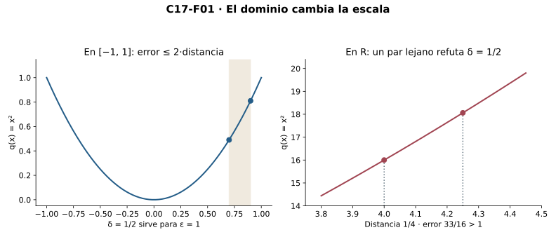
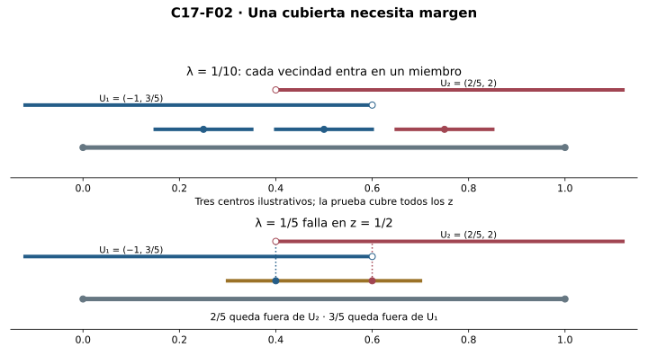
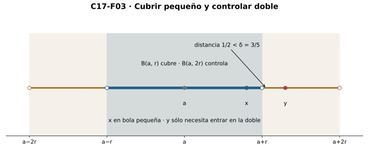
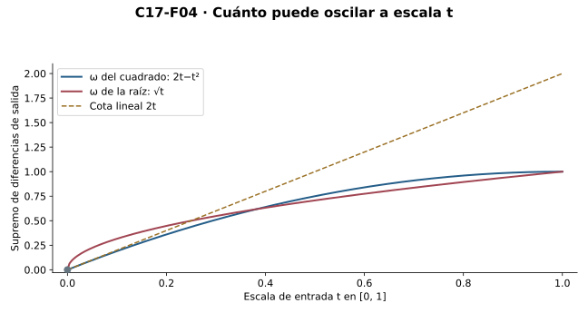
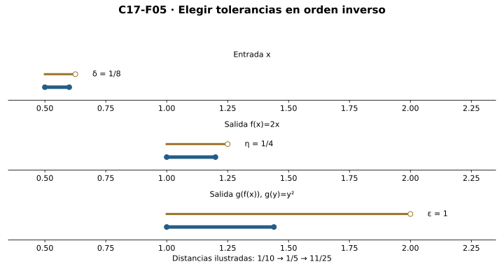
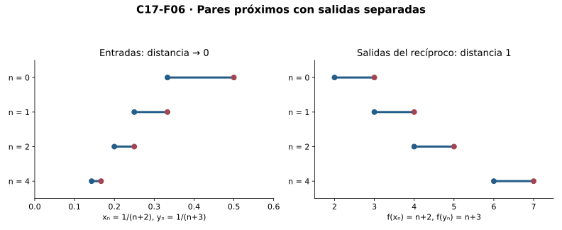
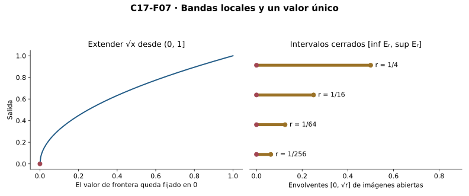
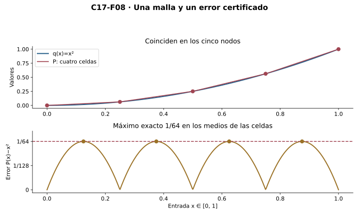

Capítulo 17 — Continuidad uniforme: una escala que sirve para todo
Índice del libro · Ejercicios de este capítulo
Una función continua puede exigir radios de entrada cada vez menores al cambiar el centro. La continuidad uniforme pregunta si, para cada precisión de salida, una sola escala protege todos los pares del dominio. Aquí demostraremos cómo la compacidad produce esa escala y qué puede hacerse con ella.
Los prerrequisitos centrales son continuidad de C14 y compacidad de C16. Supremo e ínfimo de C00, adherencia de C04, sucesiones de C06, Cauchy y raíces de C10 y tipos de C12 son interfaces heredadas. La prueba de Heine–Cantor usa una cubierta de todos los pares centro-radio admisibles y finitud, sin seleccionar radios por todos los puntos ni fabricar rutas. Las recíprocas secuenciales se declaran condicionales a CC(R) o a una enumeración dada. La extensión al cierre se construye por cortes de imágenes locales y la aproximación poligonal por una malla finita. No usamos derivadas, integrales ni teoría de límites uniformes de funciones.
17.1. Un radio antes de conocer los dos puntos
La continuidad de C14 permite que el radio de entrada dependa del centro. Si queremos controlar una función en todo su dominio, debemos preguntar si una sola escala puede servir para todos los centros a la vez. Esa pregunta depende de la función y del dominio.
Definición. Para \(f:D\to\mathbb R\), la continuidad uniforme en \(D\) significa
\[\forall\varepsilon>0\;\exists\delta>0\;\forall x,y\in D: |x-y|<\delta\Longrightarrow|f(x)-f(y)|<\varepsilon.\]
La función y el dominio ya están fijados. El radio puede depender de ellos y de \(\varepsilon\), pero se fija antes de conocer \(x,y\). En la continuidad puntual el orden es \(\forall a\in D\;\forall\varepsilon>0\;\exists\delta>0\;\forall x\in D\): conocer \(a\) antes permite un radio dependiente del centro. Uniformidad implica continuidad puntual por usar el mismo radio en cada centro; también se hereda por restricción a cualquier subconjunto. En el dominio vacío ambas propiedades son vacías: \(\delta=1\) sirve para cualquier tolerancia.
Negación. Fallar la uniformidad significa que existe una tolerancia \(\varepsilon_0>0\) tal que, para todo \(\delta>0\), hay \(x,y\in D\) con
\[|x-y|<\delta,\qquad |f(x)-f(y)|\ge\varepsilon_0.\]
El error de salida permanece separado de cero mientras la distancia de entrada puede hacerse arbitrariamente pequeña. Un radio propuesto que dependa del centro no demuestra este fallo: podría existir otro radio común que la prueba no haya encontrado.
R1. Controles algebraicos. Si \(|f(x)-f(y)|\le L|x-y|\) en todo \(D\), con una constante \(L\ge0\), llamamos a \(f\) Lipschitz. Cuando \(L>0\), \(\delta=\varepsilon/L\) da uniformidad; cuando \(L=0\), todas las diferencias son cero y sirve cualquier radio positivo. Por ejemplo, \(f(x)=ax+b\) en \(\mathbb R\) tiene constante \(|a|\). El valor absoluto tiene constante uno por la desigualdad triangular inversa.
Para \(q(x)=x^2\) en \([-M,M]\), \(M>0\),
\[|q(x)-q(y)|=|x-y||x+y|\le2M|x-y|.\]
Por tanto un radio uniforme es \(\varepsilon/(2M)\). En cambio, sobre toda la recta fijamos \(\varepsilon_0=1\). Dado \(\delta>0\), tomamos \(h=\min(\delta/2,1)>0\), \(x=1/h\) y \(y=x+h\). Entonces \(h<\delta\) y
\[y^2-x^2=h(2x+h)=2+h^2>1.\]
Estos testigos refutan todo candidato a radio común. La continuidad puntual del cuadrado sigue siendo válida por C14.

La raíz cuadrada muestra que uniformidad no exige una constante Lipschitz. Para \(x\ge y\ge0\), escribimos \(a=\sqrt{x}\), \(b=\sqrt{y}\); como \(a\ge b\),
\[(a-b)^2\le(a-b)(a+b)=x-y.\]
Así \(|\sqrt{x}-\sqrt{y}|\le\sqrt{|x-y|}\) en \([0,\infty)\), y \(\delta=\varepsilon^2\) asegura uniformidad. En \([0,1]\) no es Lipschitz: si hubiera una constante \(L>0\), con \(y=0\) se exigiría \(1/\sqrt{x}\le L\) para todo \(x>0\). Tomar \(x=1/(n+1)^2\) con \(n+1>L\) contradice esa cota. \(L=0\) tampoco sirve, porque la función no es constante. Raíces y sus reglas de orden/algebra son interfaces de C10, no resultados diferenciales.
Microcontroles
Microcontrol 1
¿Qué debe quedar fijado antes de conocer \(x,y\) en continuidad uniforme?
Ver solución del microcontrol 1
Para cada tolerancia \(\varepsilon>0\), un solo \(\delta>0\) que sirva para todos los pares del dominio fijado.
El radio responde a la precisión solicitada y puede depender de la función y del dominio fijados. Después de elegirlo se comprueba cualquier par de entradas que esté suficientemente próximo. Cambiarlo al conocer uno de los puntos destruiría el orden uniforme de cuantificadores. La misma escala debe controlar simultáneamente todas las regiones del dominio.
Microcontrol 2
¿Qué dependencia adicional admite la continuidad puntual?
Ver solución del microcontrol 2
El radio se elige después del centro \(a\), y puede depender de él además de la tolerancia, función y dominio.
En un centro fijado, sólo se compara con su valor de salida y se puede adaptar la escala a ese lugar. Eso permite radios cada vez menores al cambiar de centro sin invalidar continuidad puntual. Para uniformidad hay que demostrar que una sola elección basta para todos los centros. No es una diferencia de fórmula de error, sino de dependencia del radio.
Microcontrol 3
¿Por qué la uniformidad implica continuidad en cada punto?
Ver solución del microcontrol 3
Se fija el centro como uno de los dos argumentos y se conserva el mismo radio uniforme para todos los otros puntos del dominio.
Dado \(a\in D\), aplicamos el control uniforme al par \((x,a)\). Como el radio ya funciona para todos los pares, también funciona para todos los \(x\) próximos a ese centro. La salida de comparación pasa a ser exactamente \(f(a)\), como exige continuidad. El argumento acredita continuidad en cada punto sin volver a elegir la escala según él.
Microcontrol 4
¿Qué tolerancia se mantiene fija al negar uniformidad?
Ver solución del microcontrol 4
Una \(\varepsilon_0>0\) para la que todo radio positivo admite un par de entradas próximas con diferencia de salida al menos \(\varepsilon_0\).
Se fija primero la tolerancia infringida y después se permite que el par dependa del radio propuesto. El error debe ser mayor o igual que esa tolerancia, negación del error estricto de la definición. Un único par distante no refuta todos los radios. Para negar uniformidad necesitamos infractores arbitrariamente próximos con una separación de salidas que no disminuya.
Microcontrol 5
¿Un radio local dependiente del centro prueba falta de uniformidad?
Ver solución del microcontrol 5
No. Es una solución local, no una prueba de que todo candidato común falla. Hay que producir testigos para cada \(\delta>0\).
Una elección local es sólo un certificado posible de continuidad. Su dependencia del centro no demuestra que otra elección independiente sea imposible. Por ejemplo, la identidad admite también radios locales innecesariamente variables y sigue siendo uniforme. La negación exige comprobar el fracaso de todo candidato común con una tolerancia fija.
Microcontrol 6
¿Qué radio sirve para una constante Lipschitz \(L>0\)?
Ver solución del microcontrol 6
\(\delta=\varepsilon/L\); la desigualdad \(|f(x)-f(y)|\le L|x-y|\) convierte distancia estrictamente menor que ese radio en error menor que \(\varepsilon\).
La constante \(L\) controla todas las parejas y no cambia con sus posiciones. Si la distancia es estrictamente menor que \(\varepsilon/L\), la cota no estricta inicial se convierte en error estrictamente menor que \(\varepsilon\). Si \(L=0\), todas las salidas son iguales y cualquier radio positivo sirve; se trata por separado para no dividir por cero.
Microcontrol 7
¿Por qué la raíz puede ser uniforme sin ser Lipschitz?
Ver solución del microcontrol 7
Su control es \(|\sqrt{x}-\sqrt{y}|\le\sqrt{|x-y|}\), que da radio \(\varepsilon^2\). En cero, los cocientes \(1/\sqrt{x}\) no están acotados.
El radio cuadrático responde a la tolerancia sin conocer las entradas y por ello sí es uniforme. Un control Lipschitz exigiría una constante lineal común para la relación entre error y distancia. Comparar una entrada positiva con cero hace crecer sin cota ese cociente. Fallar esa condición más fuerte no invalida el control no lineal ya probado.
Microcontrol 8
¿Qué ocurre con el dominio vacío?
Ver solución del microcontrol 8
La condición sobre pares es vacía y cualquier radio positivo sirve; no hay puntos que exigir controlar.
Para una tolerancia cualquiera podemos elegir, por ejemplo, radio uno. No existen parejas del vacío que deban satisfacer la implicación ni que puedan refutarla. La conclusión no requiere un valor central o una muestra de salida. En un singleton sí existe un par diagonal, pero su error es cero y cualquier radio también sirve.
Ejercicios de la sección 17.1
Ejercicio 1. El orden de los cuantificadores
Escribe continuidad puntual, uniformidad y negación de uniformidad para \(f:D\to\mathbb R\). Explica qué variables puede conocer cada radio y trata el vacío.
Ver solución del ejercicio 1
Puntual: \(\forall a\in D\ \forall\varepsilon>0\ \exists\delta>0\ \forall x\in D\), distancia menor que \(\delta\) implica error respecto de \(a\) menor que \(\varepsilon\). Uniforme: \(\forall\varepsilon>0\ \exists\delta>0\ \forall x,y\in D\) con la implicación de R1. En la primera el radio puede depender del centro; en la segunda se fija antes de los dos puntos. Negación: existe \(\varepsilon_0>0\) tal que todo \(\delta>0\) admite un par con distancia menor que \(\delta\) y error al menos \(\varepsilon_0\). Función y dominio están fijados en los tres casos. En el vacío la uniformidad es vacía y su negación es falsa, porque no existen pares.
La negación uniforme fija una sola precisión infringida y permite que las entradas cambien después de cada radio. En continuidad puntual se fija además el centro antes de diseñar la escala. Por eso no se niegan las dos propiedades con los mismos testigos. En el vacío, la existencia de una pareja infractora es imposible y toda escala positiva satisface el control.
Ejercicio 2. Un radio dependiente no refuta otro posible
Una prueba de continuidad de \(x^2\) produce radios dependientes del centro y concluye que no hay radio uniforme. Diagnostica el fallo y prueba la conclusión correcta en \(\mathbb R\) con testigos para cada radio. Contrasta \([-M,M]\).
Ver solución del ejercicio 2
Que una construcción dependa del centro no excluye otras construcciones independientes. Para refutar uniformidad fijamos \(\varepsilon_0=1\); dado \(\delta>0\), sea \(h=\min(\delta/2,1)>0\), \(x=1/h\), \(y=x+h\). Si \(\delta\le2\), \(h=\delta/2<\delta\); si \(\delta>2\), \(h=1<\delta\). El error es \(h(2/h+h)=2+h^2>1\). Estos testigos sí refutan todo radio común. En \([-M,M]\), \(M>0\), \(|x^2-y^2|\le2M|x-y|\) y \(\delta=\varepsilon/(2M)\) da uniformidad. Para \(M=0\) el dominio es singleton y cualquier radio sirve.
Retorno visual. Véase C17-F01, después del argumento completo: la figura permite reconocer el mecanismo y no sustituye la prueba.
El par construido depende del candidato \(\delta\), como permite la negación, mientras la tolerancia uno permanece fija. La pequeña separación \(h\) se compensa con la entrada grande \(1/h\) y mantiene el error mayor que uno. En el dominio acotado esa compensación ya no puede crecer sin límite, pues \(|x+y|\le2M\). El caso \(M=0\) debe tratarse antes de dividir por esa barrera.
Ejercicio 3. Una escala no lineal
Prueba uniformidad de \(\sqrt{x}\) en \([0,\infty)\) sin derivadas y refuta que sea Lipschitz en \([0,1]\).
Ver solución del ejercicio 3
Para \(x\ge y\ge0\), con \(a=\sqrt{x}\ge b=\sqrt{y}\), \((a-b)^2\le(a-b)(a+b)=x-y\). Intercambiar los argumentos cubre el otro orden, así la diferencia de raíces es a lo sumo la raíz de la distancia. \(\delta=\varepsilon^2\) sirve en todo el dominio. Si una constante \(L>0\) diera control Lipschitz en \([0,1]\), tomar \(x=1/(n+1)^2\), \(y=0\) exigiría \(1/(n+1)\le L/(n+1)^2\), es decir \(n+1\le L\), falso para un índice grande. \(L=0\) falla entre cero y uno.
La desigualdad de raíces compara cualquier par no negativo y no presupone un centro positivo. Por ello el radio cuadrático incluye cero y vale en todo el semieje. Para refutar Lipschitz en el segmento basta examinar parejas con una entrada cero: la razón error/distancia supera cualquier constante al escoger un índice grande. El mismo ejemplo distingue control uniforme de control lineal.
Ejercicio 4. Restricción y regreso imposible
Prueba que uniformidad se hereda por restricción. Da una función cuya restricción a un subconjunto sea uniforme aunque ella no sea uniforme en el dominio mayor.
Ver solución del ejercicio 4
El mismo radio uniforme sirve para todos los pares del subconjunto, porque también son pares del dominio original. La recíproca falla: \(x^2\) en \(\mathbb R\) no es uniforme por E002, pero en \([0,1]\) tiene constante Lipschitz dos. Incluso la restricción a un singleton sería uniforme sin informar sobre el resto.
Restringir elimina parejas que había que controlar, sin crear otras nuevas. Por eso el certificado uniforme anterior sigue siendo válido. La vuelta agregaría parejas sobre las que no hay información. El cuadrado permite comprobar ambas afirmaciones concretamente: la barrera del dominio pequeño funciona allí y los pares que escapan en el mayor refutan uniformidad global.
Ejercicio 5. Uniformidad sin compacidad ni acotación
Para \(f(x)=3x-2\) en \(\mathbb R\), da un radio uniforme y determina si la imagen y el dominio son acotados o compactos. ¿Refuta Heine–Cantor?
Ver solución del ejercicio 5
La diferencia de salidas es \(3|x-y|\), por lo que \(\delta=\varepsilon/3\) sirve. El dominio es toda la recta, no acotado ni compacto por C16. La imagen también es toda la recta: \(y\) tiene entrada \((y+2)/3\), así tampoco es acotada ni compacta. No refuta Heine–Cantor: éste da compacidad como condición suficiente, no necesaria para una función particular.
La traslación menos dos desaparece al restar valores y el factor tres determina la escala. La imagen se identifica por un despeje válido para cualquier salida real, no sólo observando que la función crece. La uniformidad puede coexistir con entrada y salida no acotadas. Heine–Cantor no declara que todo dominio de una uniforme deba ser compacto.
17.2. Una cubierta y una escala de protección
Una subcubierta finita contiene todos los puntos del compacto, pero necesitaremos algo más: un margen que asegure que una vecindad de cada punto queda dentro de un miembro de la cubierta original. No basta tomar los radios de bolas que cubren si no hemos reservado espacio para mover el centro.
R2. Número de Lebesgue para una cubierta dada. Sea \(K\subseteq\mathbb R\) compacto y \((U_i)_{i\in I}\) una cubierta por abiertos reales. Existe \(\lambda>0\) tal que
\[\forall z\in K\;\exists i\in I:\quad K\cap(z-\lambda,z+\lambda)\subseteq U_i.\]
No se afirma una función que elija el índice para cada \(z\). Para \(K=\varnothing\) sirve \(\lambda=1\), incluso si \(I=\varnothing\). Supongamos \(K\) no vacío.
Construimos todos los triples admisibles
\[T=\{(a,i,r)\in K\times I\times\mathbb R_{>0}: (a-2r,a+2r)\subseteq U_i\}.\]
La regla \(t=(a,i,r)\mapsto B(a,r)\), donde \(B(a,r)=(a-r,a+r)\), determina una familia de abiertos reales. Cubre \(K\): para un \(a\) fijado la cubierta da algún \(i\) con \(a\in U_i\) y la apertura da \(\rho>0\) con \(B(a,\rho)\subseteq U_i\); \(r=\rho/2\) hace admisible el triple y \(a\in B(a,r)\). Ésta es una verificación de cobertura, sin seleccionar un triple para cada punto.
Compacidad entrega \(J\subseteq T\) finito cuyas bolas pequeñas cubren \(K\). No puede ser vacío. Por C16, el conjunto finito de sus radios positivos tiene mínimo positivo; definimos
\[\lambda=\min\{r:(a,i,r)\in J\}>0.\]
Para \(z\in K\) hay un triple \((a,i,r)\in J\) con \(|z-a|<r\). Si \(w\in B(z,\lambda)\), entonces
\[|w-a|\le|w-z|+|z-a|<\lambda+r\le2r.\]
Por ello \(B(z,\lambda)\subseteq B(a,2r)\subseteq U_i\). Hemos obtenido incluso la inclusión de la bola ambiental completa, que implica la inclusión relativa del enunciado. El índice se fija para este \(z\) después de fijar \(\lambda\).

1/2. Los tres centros dibujados son ilustrativos. λ=1/5 falla en el centro 1/2, porque su bola relativa contiene 2/5 y 3/5, y ningún miembro contiene ambos. Extremos de la bola se interpretan por desigualdades estrictas del texto.">La familia de todos los triples admisibles reemplaza una elección simultánea de radios. La duplicación de radios reserva margen; la finitud permite convertirlo en una escala positiva común. No tomamos el ínfimo de infinitos radios positivos, que podría ser cero.
Por ejemplo, en \(K=[0,1]\) la cubierta \(U_1=(-1,3/5)\) y \(U_2=(2/5,2)\) admite \(\lambda=1/10\) para la inclusión relativa. Si \(z\le1/2\), todo \(w\in K\) con \(|w-z|<1/10\) satisface \(w<3/5\) y entra en \(U_1\). Si \(z>1/2\), satisface \(w>2/5\) y entra en \(U_2\). La desigualdad estricta protege también el caso \(z=1/2\).
Una cubierta de un dominio no compacto no garantiza este margen. En \(D=(0,1)\), los abiertos \(U_n=(1/(n+2),2)\) forman una cubierta sin subcubierta finita, según C16. Tampoco tienen número de Lebesgue positivo: para todo \(z\in D\), cualquier bola relativa que alcance arbitrariamente cerca de cero omite estar contenida en un único \(U_n\). Dado \(\lambda>0\), basta tomar \(0<z<\min(\lambda,1)\); su bola relativa contiene puntos positivos por debajo de cada umbral.
Si una cubierta se da por abiertos relativos \(A_i\) de un compacto \(K\), C16 proporciona el levantamiento canónico \(W_i=(\mathbb R\setminus K)\cup A_i\), abierto real, con \(K\cap W_i=A_i\). Aplicar R2 a \(W\) da la misma conclusión relativa para \(A\). No se elige una familia de ambientes.
Microcontroles
Microcontrol 9
¿Qué expresa un número de Lebesgue para una cubierta de \(K\)?
Ver solución del microcontrol 9
Una escala \(\lambda>0\) tal que, para cada \(z\in K\), algún miembro de la cubierta contiene toda la bola relativa \(K\cap B(z,\lambda)\).
La escala se elige una vez para la cubierta completa, antes de fijar el centro. El miembro que contiene la bola puede cambiar con ese centro. La bola es relativa: sólo se exige contener entradas de \(K\), no todos los reales cercanos. Esta distinción permite aplicar la propiedad en extremos y en compactos separados.
Microcontrol 10
¿Por qué se reúnen todos los triples admisibles?
Ver solución del microcontrol 10
La familia queda determinada por una fórmula; la existencia local de un triple no se convierte en una elección simultánea por punto.
La pertenencia al conjunto de triples se determina por una condición explícita sobre centro, índice y radio. Incluir todos los que la cumplen evita necesitar un triple preferido para cada centro. Los testigos locales acreditan que alguno de esos triples cubre el punto considerado. La compacidad reduce después esa familia ya definida a datos finitos.
Microcontrol 11
¿Con qué bolas se cubre y en cuáles se reserva protección?
Ver solución del microcontrol 11
Las bolas \(B(a,r)\) cubren; las dobles \(B(a,2r)\) están contenidas en los abiertos originales.
La bola pequeña deja un margen libre dentro de la doble. Si otro punto está próximo a una entrada de la pequeña, la triangular lo coloca en la doble, donde sí se conserva la inclusión en el abierto original. Cubrir sólo con bolas del mismo tamaño que la región protegida no reservaría ese margen para desplazar el centro.
Microcontrol 12
¿Qué ocurre antes de tomar el mínimo de radios?
Ver solución del microcontrol 12
Compacidad produce un conjunto finito no vacío de triples cuyas bolas cubren \(K\). Sólo sus radios concretos forman el mínimo positivo.
Una familia infinita de radios positivos puede tener ínfimo cero. La reducción por compacidad entrega primero una lista finita que aún cubre todos los puntos. Si \(K\) no es vacío, esa lista tampoco lo es y su mínimo es uno de sus radios positivos. Para el vacío se asigna una escala directamente y no se toma un mínimo inexistente.
Microcontrol 13
¿Qué desigualdad mueve la protección desde \(a\) hasta \(z\)?
Ver solución del microcontrol 13
Si \(|z-a|<r\) y \(|w-z|<\lambda\le r\), entonces \(|w-a|<\lambda+r\le2r\).
La desigualdad triangular compara \(w\) con \(a\) pasando por \(z\). Las dos distancias estrictas dan \(|w-a|<\lambda+r\), y el mínimo elegido asegura \(\lambda\le r\). Así queda distancia estrictamente menor que \(2r\), incluso cuando \(\lambda=r\). La estrictitud final es la necesaria para pertenecer a la bola doble abierta.
Microcontrol 14
¿Se elige un abierto para todos los centros simultáneamente?
Ver solución del microcontrol 14
No. La escala es global, pero para un centro \(z\) fijado basta el índice de uno de los triples de la lista que lo cubre.
La lista finita ya cubre todo \(K\). Para un centro concreto, pertenecer a la unión proporciona uno de sus triples. Su radio domina la escala global y su abierto protege la bola relativa de ese centro. No hace falta convertir esas existencias por centro en una función de índices elegidos para todos a la vez.
Microcontrol 15
¿Cómo se tratan cubiertas por abiertos relativos?
Ver solución del microcontrol 15
Con \(W_i=(\mathbb R\setminus K)\cup A_i\), abierto real por C16 y con \(K\cap W_i=A_i\); se aplica R2 al levantamiento canónico.
Un compacto real es cerrado, así el complemento de \(K\) es abierto real. El levantamiento agrega esas entradas exteriores y conserva las interiores exactamente: \(K\cap W_i=A_i\). La protección obtenida con el abierto ambiental se recorta después por \(K\) y queda en el abierto relativo original. La fórmula evita reunir representantes ambientales seleccionados.
Microcontrol 16
¿Qué número sirve para el compacto vacío?
Ver solución del microcontrol 16
\(\lambda=1\), porque no hay centros que verificar, incluso si la familia de índices es vacía.
La propiedad pide una comprobación para cada centro del compacto. Si no hay centros, esa afirmación universal se cumple sin elegir ningún miembro de la cubierta. El número uno es positivo y satisface la obligación completa. Esto evita exigir una lista finita no vacía o un mínimo de radios en el caso vacío.
Ejercicios de la sección 17.2
Ejercicio 6. Proteger una cubierta concreta
Para \(K=[0,1]\), \(U_1=(-1,3/5)\) y \(U_2=(2/5,2)\), verifica que \(\lambda=1/10\) es número de Lebesgue relativo. ¿Sirve \(\lambda=1/5\)?
Ver solución del ejercicio 6
Para \(z\le1/2\), \(w\in K\) a distancia menor que \(1/10\) satisface \(w<z+1/10\le3/5\), y como \(w\ge0>-1\) pertenece a \(U_1\). Si \(z>1/2\), \(w>z-1/10>2/5\) y \(w\le1<2\), luego está en \(U_2\). Para \(\lambda=1/5\), el centro \(z=1/2\) tiene bola relativa que contiene \(3/5\) y \(2/5\). El primero no está en \(U_1\) y el segundo no está en \(U_2\); ningún miembro contiene la bola. Así ese radio falla.
Retorno visual. Véase C17-F02, después del argumento completo: la figura permite reconocer el mecanismo y no sustituye la prueba.
El corte de centros en \(1/2\) permite decidir qué abierto protege la bola relativa completa. Los extremos del dominio no molestan porque las entradas de la bola siguen en \([0,1]\). Para el radio propuesto mayor, ambos testigos están estrictamente dentro de la bola de centro medio, pero cada uno refuta un miembro distinto de la cubierta. Así se descarta toda posibilidad de que alguno contenga esa bola.
Ejercicio 7. Familia de todos los triples
Reconstruye R2 mostrando por qué \(T\) determina una familia abierta y cubre \(K\) sin escoger un triple para cada punto.
Ver solución del ejercicio 7
\(T\) contiene exactamente los triples \((a,i,r)\) con \(a\in K\), \(i\in I\), \(r>0\) y \(B(a,2r)\subseteq U_i\). Cada triple tiene componentes únicas y determina el abierto \(B(a,r)\); esto es una regla funcional, no una elección entre radios. Para un \(a\) arbitrario, cobertura da un \(i\) y apertura un \(\rho>0\); el triple \((a,i,\rho/2)\) pertenece a \(T\) y su bola contiene \(a\). La prueba establece cobertura punto por punto, sin definir un mapa de triples elegidos por centro.
La familia indexada por triples puede tener varias bolas con el mismo centro, y todas son admitidas si cumplen la protección doble. Para cobertura se necesita únicamente un triple para el centro fijado, obtenido de cobertura y apertura. La asignación de una bola a cada triple es una fórmula única. No es una selección de un triple preferido entre todas las posibilidades de cada centro.
Ejercicio 8. Tomar un ínfimo demasiado pronto
Un argumento toma el ínfimo de todos los radios locales positivos y lo declara positivo. Repara la prueba de R2 y explica el papel de la bola doble.
Ver solución del ejercicio 8
Positividad de todos los miembros no da ínfimo positivo: los recíprocos \(1/(n+1)\) tienen ínfimo cero. Primero se aplica compacidad a las bolas pequeñas de todos los triples admisibles, obteniendo una lista finita no vacía \(J\). El mínimo de sus radios es positivo por ser uno de los miembros. Si \(z\) está a distancia menor que \(r\) de un centro de la lista y \(|w-z|<\lambda\le r\), entonces \(|w-a|<2r\). La bola doble contenida en el abierto original reserva justamente ese margen; cobertura por bolas pequeñas sola no demuestra dicha inclusión.
La familia completa incluye radios arbitrariamente pequeños en muchos ejemplos y su ínfimo puede no proteger nada. La subcubierta finita conserva cobertura y permite tomar un mínimo positivo. La doble bola se utiliza después para mover la protección al centro que se está examinando. Son dos pasos distintos: reducir los datos y reservar margen para las distancias.
Ejercicio 9. Levantar sin elegir ambientes
Una cubierta de compacto se da por abiertos relativos \((A_i)\). Explica cómo obtener su número de Lebesgue sin elegir simultáneamente abiertos ambientales que representen cada \(A_i\).
Ver solución del ejercicio 9
C16 prueba que \(W_i=(\mathbb R\setminus K)\cup A_i\) es abierto real y que \(K\cap W_i=A_i\). La regla determina toda la familia por fórmula, y ésta cubre \(K\). R2 da \(\lambda>0\) para \(W\). Para cada \(z\in K\), algún \(W_i\) contiene la bola relativa; al intersectar con \(K\) se obtiene inclusión en \(A_i\). No se seleccionó una familia de representantes ambientales. El vacío se resuelve con \(\lambda=1\).
El levantamiento se define con la misma fórmula para todos los índices y no altera la selección de entradas dentro del compacto. Como \(K\) es cerrado, esos levantamientos sí son abiertos reales. El número de Lebesgue ambiental protege bolas relativas en \(K\), y la identidad de recorte las sitúa dentro de \(A_i\). La prueba mantiene procedencia de índices y evita una familia de representantes elegidos.
Ejercicio 10. Una cubierta finita sin margen
Sea \(D=\{p_n=1/(n+1):n\ge0\}\). Pon \(r_n=1/[4(n+1)(n+2)]\) y divide las bolas \(B(p_n,r_n)\) en dos abiertos, según paridad de \(n\). Prueba que cubren \(D\) y que esa cubierta finita no tiene número de Lebesgue positivo.
Ver solución del ejercicio 10
Cada bola es abierta y contiene su centro; sus uniones pares e impares son abiertos y cubren \(D\). Ninguna bola contiene otro \(p_m\): para \(m>n\), \(p_n-p_m\ge p_n-p_{n+1}=1/[(n+1)(n+2)]=4r_n\); para \(m<n\), la distancia al vecino anterior, cuando existe, es \(1/[n(n+1)]>4r_n\). Así cada \(p_n\) pertenece sólo al abierto de su paridad. Dado \(\lambda>0\), elegimos \(n\) con \(p_n-p_{n+1}<\lambda\). La bola relativa centrada en \(p_n\) contiene ambos puntos, de paridades opuestas, y no está contenida en ninguno de los dos abiertos. No hay escala positiva. El dominio omitió cero y no es compacto; finitud de una cubierta particular no sustituye compacidad.
Las bolas originales aíslan a sus propios puntos dentro de \(D\). Eso hace que los dos abiertos asignen cada entrada exclusivamente según su paridad. Sin embargo, las distancias entre vecinos de distinta paridad tienden a cero. Cualquier escala positiva admite una bola relativa que contiene dos vecinos y no cabe en ninguno de los dos miembros. La cubierta es finita, pero el dominio no es compacto.
17.3. Heine–Cantor: reducir antes de tomar el mínimo
R3. Heine–Cantor. Si \(f:D\to\mathbb R\) es continua en cada punto de un compacto \(K\subseteq D\), relativamente a \(D\), su restricción \(h:K\to\mathbb R\) es uniformemente continua. No hace falta que \(D\) sea compacto ni que \(K\) sea intervalo.
La restricción es continua por C14. Fijamos \(\varepsilon>0\). Si \(K\) es vacío, \(\delta=1\) sirve. Para \(K\) no vacío, reunimos todos los pares centro-radio que controlan las salidas en la bola doble:
\[T_\varepsilon=\{(a,r)\in K\times\mathbb R_{>0}: \forall z\in K,\ |z-a|<2r\Longrightarrow|h(z)-h(a)|<\varepsilon/2\}.\]
Cada par determina el abierto ambiental \(B(a,r)\). Estas bolas cubren \(K\): en un \(a\) fijado, continuidad con tolerancia \(\varepsilon/2\) da \(\rho>0\); \(r=\rho/2\) hace admisible \((a,r)\) y su bola contiene \(a\). No hemos escogido una función \(a\mapsto r_a\): la relación y su familia de bolas ya están determinadas por sus fórmulas.
Compacidad entrega un \(J\subseteq T_\varepsilon\) finito que cubre \(K\) mediante las bolas pequeñas. Es no vacío, y
\[\delta=\min\{r:(a,r)\in J\}>0.\]
Fijamos ahora \(x,y\in K\) con \(|x-y|<\delta\). La cubierta finita da \((a,r)\in J\) con \(|x-a|<r\). No necesitamos que \(y\) esté en esa misma bola pequeña. Basta observar
\[|y-a|\le|y-x|+|x-a|<\delta+r\le2r.\]
Tanto \(x\) como \(y\) están en la bola doble donde se guardó el control. Así
\[|h(x)-h(y)|\le|h(x)-h(a)|+|h(a)-h(y)| <\varepsilon/2+\varepsilon/2=\varepsilon.\]
El radio quedó fijado antes de los dos puntos. La prueba produjo exactamente la uniformidad, sin compacidad secuencial ni selección de rutas o radios por todos los centros.

Segunda lectura mediante R2. Para cada \(a\in K\), sea \(A_a=\{z\in K:|h(z)-h(a)|<\varepsilon/2\}\). Son abiertos relativos por continuidad y forman una cubierta, porque \(a\in A_a\). Levantarlos por \(W_a=(\mathbb R\setminus K)\cup A_a\) y aplicar R2 proporciona \(\lambda>0\). Si \(|x-y|<\lambda\), los dos puntos pertenecen a un mismo \(A_a\): \(x\) está en su propia bola relativa y \(y\) también. Cada salida dista menos que \(\varepsilon/2\) de \(h(a)\), y la desigualdad triangular concluye. Esta lectura expresa el mismo mecanismo como una propiedad de la cubierta, no como una elección global de centros.
Por Heine–Borel de C16, toda continua en un cerrado acotado real es uniformemente continua. La garantía incluye segmentos, conjuntos finitos, compactos rotos y conjuntos de recíprocos con su límite. Las hipótesis garantizan uniformidad para toda continua sobre ese dominio; no son necesarias para una función particular. La identidad en \(\mathbb R\) es uniformemente continua aunque el dominio no sea compacto.
Acotación sola no asegura la garantía: \(1/x\) en \((0,1]\) es continua pero falla la uniformidad. En efecto, para \(x_n=1/(n+2)\), \(y_n=1/(n+3)\),
\[|x_n-y_n|=\frac1{(n+2)(n+3)}\longrightarrow0, \qquad |1/x_n-1/y_n|=1.\]
Dado un radio cualquiera, arquimedianidad proporciona un índice con la distancia menor que él, mientras la separación de salida sigue siendo uno. Cerradura sola tampoco basta: el cuadrado en \(\mathbb R\) ya dio testigos. No se deduce ninguno de estos fallos de la mera forma de una estimación local.
Microcontroles
Microcontrol 17
¿Qué uniformiza Heine–Cantor cuando \(K\subseteq D\)?
Ver solución del microcontrol 17
La restricción \(h:K\to\mathbb R\), si \(K\) es compacto y \(f\) es continua en sus puntos relativamente a \(D\). No uniformiza necesariamente todo \(D\).
La continuidad de la función original en los puntos de \(K\) se conserva al restringir sus entradas. Heine–Cantor utiliza la compacidad de ese conjunto restringido para obtener un radio común allí. No controla pares que incluyan entradas de \(D\setminus K\). La distinción de dominios impide extender la conclusión a regiones no cubiertas por la prueba.
Microcontrol 18
¿Qué información guarda un par admisible \((a,r)\)?
Ver solución del microcontrol 18
Que todo punto de \(K\) a distancia menor que \(2r\) de \(a\) tiene salida a distancia menor que \(\varepsilon/2\) de \(h(a)\).
El par registra un control ya válido para toda la bola doble relativa. Tanto la entrada inicialmente cubierta como otra suficientemente próxima podrán compararse con la salida central \(h(a)\). Se reserva medio presupuesto para cada comparación. La condición de admisibilidad incluye el control de todos los puntos de esa bola, no sólo el del centro.
Microcontrol 19
¿Cómo se verifica cobertura sin función de radios?
Ver solución del microcontrol 19
Para un \(a\) fijado, continuidad entrega \(\rho\) y el par \((a,\rho/2)\) pertenece a la familia ya definida; su bola contiene \(a\).
Para el punto que se examina, el radio de continuidad \(\rho\) controla error menor que \(\varepsilon/2\). Tomar \(r=\rho/2\) hace que la bola doble tenga precisamente ese radio, y el centro está en la pequeña. Esto acredita cobertura por la familia de todos los pares admisibles. No se forma un mapa de radios seleccionados para todos los centros.
Microcontrol 20
¿Tiene que entrar \(y\) en la bola pequeña que cubre \(x\)?
Ver solución del microcontrol 20
No. \(|y-a|<\delta+r\le2r\) lo coloca en la bola doble, que conserva el control necesario.
El punto \(x\) determina una bola pequeña de la lista finita que lo contiene. Su cercanía a \(y\) añade a la distancia al centro hasta otro radio, por lo que sólo se garantiza pertenencia de \(y\) a la doble. Esa región fue protegida de antemano en la admisibilidad. Confundir ambas bolas omitiría el margen que hace funcionar la prueba.
Microcontrol 21
¿Por qué se divide el error en dos mitades?
Ver solución del microcontrol 21
Ambas salidas se comparan con \(h(a)\); la suma de los dos errores estrictos menores que \(\varepsilon/2\) es menor que \(\varepsilon\).
La triangular escribe \(|h(x)-h(y)|\le|h(x)-h(a)|+|h(a)-h(y)|\). Los dos términos se controlan con el mismo índice y cada uno es estrictamente menor que la mitad del desafío. La suma queda estrictamente menor que el total. Comparar directamente las salidas sin ese centro común gastaría un control que aún no se había acreditado.
Microcontrol 22
¿Se usa la recíproca secuencial para Heine–Cantor?
Ver solución del microcontrol 22
No. La prueba reduce una familia explícita de bolas por compacidad y usa el mínimo de una lista finita.
La familia de controles se define por una condición explícita y la compacidad proporciona su reducción finita. La elección del mínimo ocurre después de esa reducción. No se fabrican rutas de infractores ni se deduce continuidad de un criterio secuencial. Por ello la prueba de Heine–Cantor no depende de CC(R) usada en otra recíproca.
Microcontrol 23
¿Necesita \(K\) ser un intervalo?
Ver solución del microcontrol 23
No. Compactos con varias piezas o conjuntos finitos admiten el mismo argumento.
El argumento sólo usa cobertura por controles locales, compacidad y una lista finita de radios positivos. No necesita todos los puntos entre dos entradas ni monotonía. Las bolas relativas ignoran las entradas ausentes entre piezas. Así un compacto desconexo puede recibir exactamente el mismo control uniforme.
Microcontrol 24
¿Compacidad es necesaria para uniformidad de una función particular?
Ver solución del microcontrol 24
No. La identidad en toda \(\mathbb R\) es uniforme con \(\delta=\varepsilon\), aunque su dominio no sea compacto.
Heine–Cantor es una condición suficiente para toda continua en el compacto. Una función particular puede disponer de una estimación global que funcione en un dominio mayor. La identidad conserva exactamente la distancia de entrada y por eso usa radio \(\varepsilon\) en toda la recta. No se invierte la implicación del teorema.
Ejercicios de la sección 17.3
Ejercicio 11. Las dos bolas del mismo índice
En R3, justifica todas las condiciones que llevan de un par \(|x-y|<\delta\) al error menor que \(\varepsilon\). ¿Por qué no basta decir que ambos están en la misma bola pequeña?
Ver solución del ejercicio 11
La lista finita cubre \(x\) con \(B(a,r)\) y tiene \(\delta\le r\). Entonces \(|x-a|<r<2r\) y \(|y-a|\le|y-x|+|x-a|<\delta+r\le2r\). El segundo punto puede estar fuera de \(B(a,r)\), pero ambos cumplen la condición del índice en \(B(a,2r)\cap K\), así sus salidas distan menos que \(\varepsilon/2\) de \(h(a)\). La triangular da error menor que \(\varepsilon\). Afirmar pertenencia a la bola pequeña para \(y\) gastaría una inclusión no probada.
Retorno visual. Véase C17-F03, después del argumento completo: la figura permite reconocer el mecanismo y no sustituye la prueba.
La distancia de \(y\) al centro de la bola se controla pasando por \(x\), que sí está en la bola pequeña. El mínimo de radios aporta el margen para que ambos queden en la doble. Allí la admisibilidad controla cada salida respecto del mismo valor central. La suma de los dos presupuestos medios completa el error del par sin una inclusión adicional no demostrada.
Ejercicio 12. Uniformizar sólo la restricción
Para \(f(x)=x^2\) en \(D=\mathbb R\) y \(K=[-2,-1]\cup[1,2]\), aplica Heine–Cantor y da además un radio explícito. ¿Qué se puede concluir sobre todo \(D\)?
Ver solución del ejercicio 12
\(K\) es cerrado/acotado, compacto por C16, y \(f\) es continua en sus puntos relativamente a \(D\). R3 hace uniforme la restricción sobre \(K\), sin exigir que sea intervalo. Además \(|x+y|\le4\) allí, por lo que \(\delta=\varepsilon/4\) controla el error. Nada de esto uniformiza todo \(D\); E002 ya refuta uniformidad del cuadrado en la recta.
Las dos piezas son cerradas y acotadas, de modo que su unión es compacta aunque no sea intervalo. El radio explícito usa una cota de \(|x+y|\) válida para cualquier par de \(K\), incluso si sus puntos pertenecen a piezas diferentes. La conclusión corresponde a esa restricción. Los infractores que escapan en \(D\) siguen siendo posibles fuera del compacto.
Ejercicio 13. La lectura por cubiertas de salida
Prueba Heine–Cantor usando los abiertos relativos \(A_a=\{z\in K:|h(z)-h(a)|<\varepsilon/2\}\) y R2. Declara el orden de los testigos.
Ver solución del ejercicio 13
Cada \(A_a\) es preimagen relativa de un intervalo abierto y contiene \(a\), así forman cubierta. Se levantan por \(W_a=(\mathbb R\setminus K)\cup A_a\) y R2 da una escala \(\lambda>0\) antes de los puntos \(x,y\). Para \(x\in K\), R2 proporciona un índice \(a\) que contiene su bola relativa. Si \(|x-y|<\lambda\), tanto \(x\) como \(y\) están en ella y por tanto en \(A_a\). Ambos errores respecto de \(h(a)\) son menores que \(\varepsilon/2\), y su suma controla la diferencia. No se construye un selector \(x\mapsto a_x\). Para \(K\) vacío sirve cualquier radio.
Las preimágenes se definen para todos los centros por una condición de salida y quedan abiertas relativas por continuidad. El número de Lebesgue se obtiene antes del par solicitado. Para ese par se fija sólo un miembro que proteja la bola de \(x\), y ésta contiene también a \(y\). El índice puede variar con \(x\), pero el radio no, que es la conclusión uniforme.
Ejercicio 14. Acotación sin frontera incluida
Refuta uniformidad de \(1/x\) en \((0,1]\) con pares dados válidos desde \(n=0\). Explica qué hipótesis de Heine–Cantor falta.
Ver solución del ejercicio 14
Tomamos \(x_n=1/(n+2)\) y \(y_n=1/(n+3)\), ambos del dominio desde cero. La distancia es \(1/[(n+2)(n+3)]\), tendente a cero, pero las salidas son \(n+2,n+3\) y difieren uno. Para \(\varepsilon_0=1\), todo radio positivo admite un índice con distancia menor, refutando uniformidad. El dominio es acotado pero no cerrado: cero es adherente y está omitido. Falta compacidad, no continuidad de la función en el dominio efectivo.
Los pares están en el dominio efectivo desde el primer término y sus diferencias se calculan exactamente. Una precisión fija uno se infringe para entradas con distancia tan pequeña como se quiera. Acotación del dominio no basta para Heine–Cantor: también hace falta cerradura para compacidad. La discontinuidad no se afirma en cero, porque cero no es una entrada del recíproco dado.
Ejercicio 15. Vacuidad y prueba sin rutas
Explica dónde entra no vacuidad en el mínimo de R3 y por qué la prueba no necesita CC(R). Contrasta la demostración por pares malos de una negación.
Ver solución del ejercicio 15
Para \(K\) no vacío, una subcubierta no puede tener conjunto de índices vacío; por ello sus radios forman conjunto finito no vacío y poseen mínimo positivo. Para \(K\) vacío no se toma mínimo: \(\delta=1\) satisface la condición vacía. La prueba define todos los pares admisibles, verifica cobertura con testigos individuales y usa una aplicación de compacidad seguida de datos finitos; no fabrica rutas ni selecciona radios por todos los centros. Una prueba que fabrica pares malos para cada escala necesita justificar esa selección numerable, como en la recíproca condicional de R6.
La no vacuidad de \(K\) obliga a que una reducción que lo cubre contenga algún índice. Ese hecho permite el mínimo de radios positivos. Para el vacío se elige uno directamente y no se usa ese paso. La prueba por cubiertas usa existencias puntuales y un conjunto finito, mientras una ruta de pares malos exige reunir testigos para todas las escalas naturales.
17.4. Medir la oscilación a cada escala
Heine–Cantor garantiza una escala, pero puede no dar una fórmula sencilla para ella. Podemos registrar cuánto varía la función cuando restringimos la distancia de entrada.
R4. Módulo de oscilación. Supongamos \(D\) no vacío y \(f:D\to\mathbb R\) acotada: \(|f(x)|\le B\) con \(B\ge0\). Para \(t\ge0\) definimos
\[\omega_f(t)=\sup\{|f(x)-f(y)|:x,y\in D,\ |x-y|\le t\}.\]
El conjunto es no vacío porque admite pares diagonales con diferencia cero; está acotado entre cero y \(2B\). El supremo existe por C00. Si \(D\) es vacío, fijamos por convención \(\omega_f(t)=0\); no se toma supremo real del conjunto vacío. La acotación de valores es una hipótesis suficiente para que este módulo global sea real finito. Uniformidad sola no acota los valores: la identidad en \(\mathbb R\) lo recuerda. Esa identidad tiene, de hecho, módulo finito \(\omega(t)=t\); no afirmamos que toda función no acotada carezca de módulo finito.
Los conjuntos de diferencias aumentan al aumentar \(t\); por eso \(\omega\) es no decreciente, \(\omega(0)=0\), y
\[|f(x)-f(y)|\le\omega_f(t)\quad\text{si }|x-y|\le t.\]
En este marco acotado, \(f\) es uniformemente continua si y sólo si \(\omega_f(t)\to0\) cuando \(t\downarrow0\). Para la dirección directa, dada \(\varepsilon>0\), uniformidad con tolerancia \(\varepsilon/2\) da \(\delta>0\). Si \(0<t<\delta\), todos los valores del conjunto que define \(\omega(t)\) son menores que \(\varepsilon/2\), por lo que
\[0\le\omega(t)\le\varepsilon/2<\varepsilon.\]
El supremo podría igualar \(\varepsilon/2\); por eso reservamos presupuesto. Para la recíproca, el límite da \(\eta>0\) con \(\omega(t)<\varepsilon\) para \(0<t<\eta\). Tomamos \(t=\eta/2\) y \(\delta=t\). Toda pareja de distancia menor que \(\delta\) está en el conjunto del módulo a escala \(t\), y su diferencia es a lo sumo \(\omega(t)<\varepsilon\).
Si \(f\) es Lipschitz con constante \(L\), su módulo satisface \(\omega_f(t)\le Lt\). La raíz tiene \(\omega(t)\le\sqrt t\) en cualquier dominio no negativo donde este módulo sea definido; son dos tipos distintos de dependencia entre escalas.
Un módulo exacto. Para \(q(x)=x^2\) en \([0,1]\),
\[\omega_q(t)= \begin{cases}2t-t^2,&0\le t\le1,\\1,&t\ge1.\end{cases}\]
Si \(0\le v\le u\le1\) y \(d=u-v\le t\le1\), entonces \(u^2-v^2=d(2u-d)\le d(2-d)\le t(2-t)\). La última desigualdad resulta de \((t-d)(2-t-d)\ge0\). El par \(u=1\), \(v=1-t\) alcanza la cota. Si \(t\ge1\), todas las diferencias son a lo sumo uno y el par \(1,0\) lo alcanza. Para todo \(t\), \(\omega_q(t)\le2t\); esa cota Lipschitz es más simple pero menos precisa.

No exigimos que el supremo sea alcanzado para un dominio arbitrario, ni continuidad del módulo como función de \(t\). Para aplicar el criterio sólo necesitamos la definición del supremo y el control cerca de cero. En un compacto, C16 acota toda continua y R3 hace que su módulo tienda a cero.
Microcontroles
Microcontrol 25
¿Qué garantiza que el módulo global definido sea real finito?
Ver solución del microcontrol 25
En el marco usado, \(D\) no vacío y \(|f|\le B\): las diferencias contienen cero y están acotadas por \(2B\).
Para cualquier escala no negativa, un par diagonal aporta error cero si el dominio no es vacío. La triangular y la barrera de valores dan error a lo sumo \(2B\) para todos los pares. No vacuidad y acotación permiten aplicar completitud al conjunto de errores. En otros ejemplos una estimación directa por escala puede reemplazar la acotación global de valores.
Microcontrol 26
¿Qué significa \(\omega_f(t)\)?
Ver solución del microcontrol 26
El supremo de todas las diferencias de salida de pares del dominio a distancia a lo sumo \(t\). No exige que un par alcance ese supremo.
La condición de distancia admite también parejas exactamente a escala \(t\). El módulo domina a todos sus errores mediante una cota óptima, aunque ningún par produzca el mayor error. Para interpretarlo como máximo haría falta demostrar que se alcanza. Su definición como supremo evita asumir esa pertenencia.
Microcontrol 27
¿Por qué \(\omega_f(0)=0\)?
Ver solución del microcontrol 27
La distancia cero implica \(x=y\), así todas las diferencias del conjunto son cero. Para dominio vacío se fijó módulo cero por convención.
Si \(|x-y|\le0\), la no negatividad de la distancia obliga a igualdad de entradas. La diferencia de salidas es entonces cero. En un dominio no vacío el conjunto de errores es exactamente \(\{0\}\) y su supremo vale cero. En el vacío se usa la convención declarada porque el conjunto vacío no tiene supremo real.
Microcontrol 28
¿Por qué el módulo no decrece?
Ver solución del microcontrol 28
Al aumentar \(t\) se admiten todos los pares anteriores y quizá otros; el supremo de un conjunto contenido no supera el del mayor.
El conjunto de parejas de escala menor está incluido en el de escala mayor. Por ello todo error anterior también aparece entre los nuevos errores, y la menor cota superior del primero no supera la del segundo. La conclusión no dice que el crecimiento sea estricto: puede haber escalas en que no se agreguen errores mayores.
Microcontrol 29
¿Por qué una cota estricta de todos los valores no da supremo estrictamente menor?
Ver solución del microcontrol 29
Por ejemplo, todos los valores de \([0,1)\) son menores que uno pero su supremo es uno. Se usa presupuesto \(\varepsilon/2\).
El supremo puede estar en la frontera que ningún valor alcanza. De controles puntuales menores que \(\varepsilon\) sólo deducimos una cota superior no estricta \(\omega\le\varepsilon\). Pedir la mitad del presupuesto permite después concluir \(\omega\le\varepsilon/2<\varepsilon\). Esta reserva recupera la estrictitud sin atribuir al supremo un par maximizador.
Microcontrol 30
¿Cómo da uniformidad el límite del módulo en cero?
Ver solución del microcontrol 30
Se toma una escala \(t>0\) con \(\omega_f(t)<\varepsilon\) y se fija \(\delta=t\); los pares con distancia menor que ella tienen error a lo sumo ese módulo.
Se fija primero una escala positiva en la que el módulo esté por debajo del desafío. Después todo par a distancia menor que ella también cumple la condición no estricta usada para definir los errores del módulo. Su error está dominado por éste y queda por debajo de la tolerancia. La escala no depende del par considerado.
Microcontrol 31
¿Qué par alcanza el módulo de \(x^2\) en \([0,1]\) para \(0\le t\le1\)?
Ver solución del microcontrol 31
El par \(1,1-t\) tiene distancia \(t\) y diferencia \(2t-t^2\), igual a la cota probada para todos los pares.
La primera entrada es el extremo superior uno y la segunda retrocede exactamente \(t\), permaneciendo en \([0,1]\). Al restar sus cuadrados se obtiene \(1-(1-t)^2=2t-t^2\). La cota global y este par que la alcanza prueban igualdad del módulo, no sólo una estimación superior. Para escalas mayores que uno, el par de extremos alcanza el valor máximo uno.
Microcontrol 32
¿Uniformidad obliga a valores acotados en todo dominio?
Ver solución del microcontrol 32
No: la identidad uniforme en \(\mathbb R\) es no acotada, aunque sí tiene módulo finito \(\omega(t)=t\).
La uniformidad limita cuánto cambia la salida entre entradas próximas, no qué tan grande puede ser una salida individual. La identidad en la recta tiene valores arbitrariamente grandes, pero cambios iguales a las distancias de entrada. Su módulo es finito a cada escala aunque no exista una barrera global de valores. Son obligaciones diferentes.
Ejercicios de la sección 17.4
Ejercicio 16. Existencia y orden del módulo
Para \(f:D\to\mathbb R\) acotada en un dominio no vacío, justifica existencia de \(\omega_f(t)\), su monotonía, valor en cero y la cota de diferencias. Trata el dominio vacío.
Ver solución del ejercicio 16
Si \(|f|\le B\), toda diferencia está entre cero y \(2B\). Para cada \(t\ge0\), los pares diagonales aportan cero, por lo que el conjunto es no vacío y tiene supremo. Si \(s\le t\), todos los pares admitidos a escala \(s\) también lo son a escala \(t\), así \(\omega(s)\le\omega(t)\). A escala cero sólo hay pares iguales y el módulo vale cero. Toda diferencia admitida es a lo sumo el supremo. Para vacío se define módulo cero por convención; no se atribuye un supremo real al conjunto vacío.
La cota global produce una barrera uniforme \(2B\) para errores, no sólo para un par. Los pares diagonales dan no vacuidad a cada escala. El supremo domina cada diferencia sin prometer un par maximizador. La convención para el vacío se declara aparte porque completitud real no entrega un supremo del conjunto vacío.
Ejercicio 17. Supremo y presupuesto estricto
Una prueba dice: «todos los errores son menores que \(\varepsilon\), luego su supremo también». Repara la dirección uniforme implica módulo tendente a cero y prueba la recíproca.
Ver solución del ejercicio 17
El supremo de \([0,\varepsilon)\) es \(\varepsilon\), así la estrictitud no pasa así al supremo. Se pide primero error \(\varepsilon/2\) a uniformidad; para \(0<t<\delta\), el supremo es a lo sumo \(\varepsilon/2<\varepsilon\), lo que prueba el límite cero. Recíprocamente, dado \(\varepsilon\), el límite da \(\eta>0\) y \(\omega(t)<\varepsilon\) para \(0<t<\eta\). Fijamos \(t=\eta/2\) y \(\delta=t\). Todo par de distancia menor que \(\delta\) tiene error a lo sumo \(\omega(t)<\varepsilon\). Se conserva el orden de los cuantificadores.
La definición del módulo admite distancias menores o iguales que \(t\), mientras uniformidad controla distancias estrictamente menores que \(\delta\). Por eso se toma \(t<\delta\) al usarla. El presupuesto medio conserva margen cuando se pasa al supremo. En la recíproca se fija una escala positiva concreta con módulo pequeño antes de verificar cualquier pareja.
Ejercicio 18. Módulo exacto del cuadrado
Calcula \(\omega(t)\) para \(x^2\) en \([0,1]\), para todo \(t\ge0\). Da los pares que alcanzan cada cota y compara con \(2t\).
Ver solución del ejercicio 18
Si \(0\le v\le u\le1\), \(d=u-v\le t\le1\), la diferencia es \(d(2u-d)\le d(2-d)\le t(2-t)\) porque la última diferencia es \((t-d)(2-t-d)\ge0\). El par \(1,1-t\) alcanza \(2t-t^2\) para \(0\le t\le1\). Si \(t\ge1\), la diferencia no supera uno y el par \(1,0\) lo alcanza. Así el módulo es \(2t-t^2\) en la primera escala y uno después. Siempre está bajo \(2t\); para \(0<t\le1\) la mejora exacta es \(t^2\).
Retorno visual. Véase C17-F04, después del argumento completo: la figura permite reconocer el mecanismo y no sustituye la prueba.
La cota se demuestra primero para un par arbitrario ordenado, con separación \(d\le t\). El factor algebraico \((t-d)(2-t-d)\) es no negativo en la escala hasta uno, lo que compara su error con el candidato exacto. Un par explícito alcanza después la cota y acredita igualdad. Más allá del diámetro del dominio ya se admiten todos los pares y el módulo queda constante en uno.
Ejercicio 19. Una raíz y su módulo
Calcula el módulo exacto de \(\sqrt{x}\) en \([0,1]\). Contrasta la dependencia en \(t\) con la del cuadrado.
Ver solución del ejercicio 19
R1 da diferencia a lo sumo \(\sqrt{|x-y|}\), por tanto \(\omega(t)\le\sqrt t\) para \(0\le t\le1\). El par \(t,0\) alcanza esa cota. Para \(t\ge1\), todas las diferencias son a lo sumo uno y el par \(1,0\) la alcanza. El módulo es \(\sqrt t\) hasta uno y uno después. Tiende a cero, pero su cociente por \(t\) es \(1/\sqrt t\) cerca de cero y no admite cota lineal uniforme. El cuadrado sí tiene módulo a lo sumo \(2t\).
El par que alcanza \(\sqrt t\) está dentro del segmento sólo para \(t\le1\), y por eso se separa la escala mayor. Allí el par de extremos ya alcanza toda la variación de salida. El módulo de la raíz tiende a cero, lo que confirma uniformidad. Su crecimiento como raíz de la escala impide una barrera lineal común cerca de cero.
Ejercicio 20. Valores no acotados y módulo finito
Explica por qué no se puede concluir que una uniforme en \(\mathbb R\) tiene valores acotados. Calcula el módulo de la identidad y prueba uniformidad directamente.
Ver solución del ejercicio 20
La identidad tiene valores que recorren toda la recta y no están acotados. A escala \(t\ge0\), las diferencias admitidas están entre cero y \(t\), y el par \(0,t\) alcanza \(t\), así el módulo es finito e igual a \(t\). Directamente, \(\delta=\varepsilon\) da uniformidad. La hipótesis de acotación de R4 era suficiente para construir un módulo real global sin más análisis, no necesaria en todos los ejemplos.
El módulo examina diferencias de salida a una distancia fijada, no el conjunto de salidas individuales. Para la identidad esas diferencias nunca superan \(t\) y una pareja separada exactamente \(t\) alcanza la cota. Así hay módulo finito a cada escala aunque las salidas no admitan cota global. El ejemplo precisa el carácter suficiente de la hipótesis de acotación en R4.
17.5. Transportar tolerancias por operaciones
La continuidad puntual se conserva por muchas operaciones. Uniformidad exige además controlar los factores que multiplican errores y los denominadores. Todas las funciones de una operación se consideran en el mismo dominio efectivo.
R5. Sumas y productos. Si \(f,g:D\to\mathbb R\) son uniformemente continuas, \(f+g\) también: elegimos radios para error \(\varepsilon/2\) en cada una y tomamos su mínimo. La desigualdad triangular suma los dos errores. Multiplicar por una constante \(c\) se trata con \(\varepsilon/|c|\) cuando \(c\ne0\); para \(c=0\) la salida es constante.
Para productos suponemos además \(|f|\le M_f\), \(|g|\le M_g\) en \(D\), con cotas no negativas. Pedimos a ambas funciones errores menores que \(\eta=\varepsilon/(M_f+M_g+1)>0\) y usamos el mínimo de sus radios. Entonces
\[|f(x)g(x)-f(y)g(y)| \le |g(x)|\,|f(x)-f(y)|+|f(y)|\,|g(x)-g(y)| \le(M_f+M_g)\eta<\varepsilon.\]
El caso \(M_f+M_g=0\) entrega diferencia cero y satisface la conclusión. Sólo se combinan dos radios dados, no una familia infinita. Las cotas son suficientes: sin ellas, dos funciones uniformes pueden tener producto no uniforme. \(f(x)=g(x)=x\) en \(\mathbb R\) tiene producto \(x^2\). No son necesarias para cada producto particular: multiplicar la identidad por la constante uno sigue siendo uniforme.
Recíprocos y cocientes. Si \(g\) es uniforme y \(|g(x)|\ge m>0\) en \(D\), entonces \(1/g\) tiene exactamente ese dominio y
\[\left|\frac1{g(x)}-\frac1{g(y)}\right| \le\frac{|g(x)-g(y)|}{m^2}.\]
Un radio que da error \(\varepsilon m^2\) para \(g\) da error \(\varepsilon\) para el recíproco. Éste también está acotado por \(1/m\). Si \(f\) es uniforme y acotada, el producto de \(f\) y \(1/g\) muestra uniformidad del cociente. «No tener ceros» por sí solo no proporciona \(m\): en \((0,1]\), la identidad es uniforme, no tiene ceros y su recíproco no es uniforme.
En un compacto, C16 proporciona acotación para las continuas y un margen positivo para el denominador continuo sin ceros. R3 uniformiza las funciones, y las reglas anteriores justifican el cociente. Alternativamente, C14 da continuidad del cociente y R3 vuelve a aplicarse, siempre con el dominio compacto declarado.
Composición. Sea \(f:D\to E\) uniforme y \(g:E\to\mathbb R\) uniforme sobre \(E\); bastaría uniformidad de \(g\) en \(f[D]\). Para error final \(\varepsilon\), primero elegimos \(\eta>0\) que controle \(g\). Después elegimos \(\delta>0\) que produzca error de salida menor que \(\eta\) para \(f\). Así
\[|x-y|<\delta\Longrightarrow|f(x)-f(y)|<\eta \Longrightarrow|g(f(x))-g(f(y))|<\varepsilon.\]

El orden de elección sigue el transporte de tolerancias en sentido inverso al de las funciones. Continuidad meramente puntual de la función exterior no basta: componer la identidad uniforme en \(\mathbb R\) con el cuadrado continuo pierde uniformidad.
Finalmente, una inyección continua sobre un compacto \(K\) tiene inversa continua en \(H=f[K]\) por C16. Considerar la inversa como función \(H\to\mathbb R\) conserva continuidad porque las distancias de salida son las mismas. Como \(H\) es compacto, R3 hace también uniforme a esa inversa. No afirmamos que tenga constante Lipschitz: el cuadrado en \([0,1]\) tiene inversa raíz, uniforme pero no Lipschitz.
Microcontroles
Microcontrol 33
¿Cómo se combinan dos radios para una suma?
Ver solución del microcontrol 33
Se pide error \(\varepsilon/2\) a cada sumando y se toma el mínimo de los dos radios positivos.
La distancia menor que el mínimo cumple simultáneamente los dos controles uniformes. La triangular de diferencias de la suma añade sus dos errores, cada uno menor que medio desafío. Los radios se diseñan antes del par y por ello su mínimo también es uniforme. El mismo procedimiento sirve para diferencias con un cambio de signo.
Microcontrol 34
¿Qué hipótesis suficientes se añaden para productos?
Ver solución del microcontrol 34
Cotas globales \(M_f,M_g\) de los valores; controlan los factores que multiplican las diferencias en la identidad de producto.
En \(f(x)g(x)-f(y)g(y)\) aparece una diferencia pequeña multiplicada por un valor de la otra función. Las cotas globales impiden que ese factor amplifique el error sin límite al cambiar las entradas. La regla ofrece condiciones suficientes, no necesarias para cada producto. En dominios compactos, continuidad de los factores puede proporcionar esas cotas mediante Weierstrass.
Microcontrol 35
¿Qué producto refuta conservación automática en dominios arbitrarios?
Ver solución del microcontrol 35
La identidad por sí misma en \(\mathbb R\): ambos factores son uniformes, pero su producto \(x^2\) no lo es.
Ambas identidades conservan distancias y por ello tienen radios uniformes. Pero el producto compara cuadrados, cuyo factor \(|x+y|\) puede hacerse arbitrariamente grande. Los pares próximos que escapan producen errores de cuadrado separados de cero. Así el ejemplo conserva uniformidad de los factores mientras refuta una regla general de producto sin más control.
Microcontrol 36
¿Qué dato positivo controla un recíproco?
Ver solución del microcontrol 36
Un margen global \(|g(x)|\ge m>0\); entonces la diferencia de recíprocos es a lo sumo la diferencia de \(g\) dividida por \(m^2\).
La identidad exacta es \(|1/g(x)-1/g(y)|=|g(x)-g(y)|/(|g(x)||g(y)|)\). Cada factor del denominador es al menos \(m\), así el producto es al menos \(m^2>0\). Pedir a \(g\) error menor que \(m^2\varepsilon\) permite usar su radio uniforme para el recíproco. El margen también asegura que todas sus evaluaciones estén definidas.
Microcontrol 37
¿Ausencia de ceros basta para ese margen?
Ver solución del microcontrol 37
No. \(g(x)=x\) en \((0,1]\) nunca vale cero pero tiene valores positivos arbitrariamente pequeños.
No anularse es una afirmación separada para cada entrada y no asegura una distancia común de las salidas a cero. En la identidad positiva, los recíprocos de naturales infringen cualquier barrera positiva propuesta. Al invertir la función esas pequeñas salidas amplifican cambios de entrada. Compacidad y continuidad aportarían un margen, pero aquí el dominio omite su frontera cero.
Microcontrol 38
¿Qué tolerancia se elige primero en una composición?
Ver solución del microcontrol 38
La tolerancia intermedia \(\eta\) que produce error final \(\varepsilon\) en la función exterior; después el radio de la interior que produce error menor que \(\eta\).
La función exterior traduce primero el desafío final a una precisión de entradas intermedias. La interior traduce después esa precisión a una distancia del dominio inicial. Al verificar un par, se recorren esas traducciones en el orden de evaluación de la composición. Diseñar la escala en orden inverso al cálculo garantiza el presupuesto final.
Microcontrol 39
¿Qué dominio basta controlar uniformemente para la función exterior?
Ver solución del microcontrol 39
La imagen \(f[D]\), porque sólo esos valores se usan al evaluar \(g\circ f\).
Toda evaluación intermedia pertenece a la imagen declarada, así sólo se comparan pares de esa imagen al aplicar la exterior. Su comportamiento fuera de ella no interviene en el error compuesto. Hay que conservar pertenencia al dominio exterior para definir la composición. La restricción uniforme a la imagen basta para las tolerancias que se utilizan.
Microcontrol 40
¿Por qué una inversa compacta continua es también uniforme?
Ver solución del microcontrol 40
La imagen \(H\) es compacta por C16 y la inversa es continua allí; Heine–Cantor se aplica con dominio \(H\).
Primero la compacidad del dominio directo hace compacta su imagen por continuidad. Después la inversa continua tiene esa imagen como dominio y cumple las premisas de Heine–Cantor. La uniformidad obtenida compara pares de salidas intermedias antes de conocerlos. No se necesita que el dominio o la imagen sean intervalos.
Ejercicios de la sección 17.5
Ejercicio 21. Radios para una suma
Prueba uniformidad de \(af+bg\) si \(f,g\) son uniformes en el mismo dominio y \(a,b\) son constantes. Trata constantes cero.
Ver solución del ejercicio 21
Si \(a\ne0\), pedimos a \(f\) error menor que \(\varepsilon/(2|a|)\) y obtenemos un radio; si \(a=0\), el término tiene error cero y usamos radio uno para él. Hacemos lo mismo con \(g,b\). El mínimo de ambos radios positivos sirve para todos los pares y la diferencia de \(af+bg\) es a lo sumo la suma de los dos errores escalados, cada uno menor que \(\varepsilon/2\) cuando no es cero. La suma es menor que \(\varepsilon\).
Las constantes no nulas multiplican los errores y requieren dividir el presupuesto por su magnitud. Una constante cero elimina su sumando y puede recibir cualquier radio auxiliar positivo. El mínimo garantiza ambos controles antes de conocer las entradas. La triangular permite combinar los errores escalados sin suponer cotas globales de los valores de \(f\) y \(g\).
Ejercicio 22. Factores que amplifican errores
Prueba la regla de producto bajo cotas \(M_f,M_g\). Muestra que eliminar ambas cotas pierde la garantía y que no son necesarias para todo producto particular.
Ver solución del ejercicio 22
Pedimos errores menores que \(\eta=\varepsilon/(M_f+M_g+1)\) a ambas funciones y tomamos el mínimo de sus radios. La identidad de diferencias del producto da cota \((M_f+M_g)\eta<\varepsilon\), incluidos sumandos nulos. En \(\mathbb R\), ambos factores identidad son uniformes y no acotados, pero su producto cuadrado falla uniformidad. En cambio, identidad por constante uno es uniforme aunque el primer factor sea no acotado. La regla declara condiciones suficientes y el ejemplo sólo refuta una regla universal sin ellas.
La identidad de producto separa cada cambio de factor y deja un valor del otro como multiplicador. Las cotas globales y el presupuesto común impiden amplificación sin control. El uno añadido al denominador conserva positividad incluso si ambas barreras valen cero. Los dos ejemplos finales distinguen perder una garantía universal de afirmar que todo producto sin esas cotas debe fallar.
Ejercicio 23. Un cociente sobre dos piezas
En \(K=[-2,-1]\cup[1,2]\), sean \(f(x)=x+1\) y \(g(x)=x^2\). Da un radio explícito uniforme para \(f/g\), usando cotas de numerador, denominador y diferencias.
Ver solución del ejercicio 23
En \(K\), \(|f|\le3\), \(g\ge1\), \(|f(x)-f(y)|=|x-y|\), y \(|g(x)-g(y)|\le4|x-y|\). Sea \(d=|x-y|\). La identidad \(f(x)/g(x)-f(y)/g(y)=(f(x)-f(y))/g(x)+f(y)(1/g(x)-1/g(y))\) da error a lo sumo \(d+3\cdot4d=13d\), porque los denominadores tienen magnitud al menos uno. Por tanto \(\delta=\varepsilon/13\) sirve para todos los pares, incluso en piezas distintas. El cociente está definido en todo \(K\).
El margen del denominador vale uno en todas las entradas, incluidas las dos piezas. La identidad de recíprocos acota su diferencia por la del cuadrado, a lo sumo cuatro veces la distancia. El numerador tiene diferencia igual a la distancia y magnitud a lo sumo tres. Reunir ambos términos da el control trece, suficiente para un radio común sin exigir que sea óptimo.
Ejercicio 24. El orden inverso de tolerancias
Sean \(f:D\to E\) y \(g:E\to\mathbb R\) uniformes. Prueba uniformidad de \(g\circ f\) y refuta sustituir uniformidad de \(g\) por continuidad puntual.
Ver solución del ejercicio 24
Primero uniformidad de \(g\) para \(\varepsilon\) da \(\eta>0\). Después uniformidad de \(f\) para \(\eta\) da \(\delta>0\). Distancia de entrada menor que \(\delta\) produce salidas de \(f\) a distancia menor que \(\eta\), y por tanto error final menor que \(\varepsilon\). Basta control de \(g\) sobre \(f[D]\). Si \(D=E=\mathbb R\), \(f\) identidad es uniforme, \(g\) cuadrado es continua pero no uniforme, y la composición también es cuadrado no uniforme. La continuidad puntual exterior no da una tolerancia intermedia común.
Retorno visual. Véase C17-F05, después del argumento completo: la figura permite reconocer el mecanismo y no sustituye la prueba.
La tolerancia intermedia debe servir para cualquier par de salidas de la interior. Continuidad puntual de la exterior permitiría que esa tolerancia cambiara al cambiar la salida central y no satisface ese requisito. La identidad seguida del cuadrado mantiene uniformidad de la interior y continuidad de la exterior, pero falla uniformidad de la composición. El ejemplo refuta exactamente la sustitución propuesta.
Ejercicio 25. Inversa uniforme sin control lineal
Justifica que una inyección continua \(f:K\to\mathbb R\) sobre compacto tiene inversa uniforme en su imagen. Da un ejemplo en que esa inversa no sea Lipschitz.
Ver solución del ejercicio 25
C16 hace compacta \(H=f[K]\) y prueba continuidad de la inversa \(h:H\to K\). Retipar su salida a \(\mathbb R\) conserva continuidad, por usar la misma distancia; Heine–Cantor la hace uniforme sobre \(H\). El vacío también queda incluido. Para \(f(x)=x^2\) sobre \([0,1]\), la inyectividad sigue del orden no negativo, su imagen es \([0,1]\) por raíces C10 y su inversa es \(\sqrt y\). R1 prueba que ésta es uniforme y no Lipschitz en ese dominio.
La continuidad inversa se obtiene primero por transporte de cerrados en C16, con dominio en la imagen. Esa imagen es compacta por continuidad de la directa. Heine–Cantor añade uniformidad de la inversa allí. La raíz sobre \([0,1]\) cumple esta conclusión con radio cuadrático aunque no disponga de una constante Lipschitz.
17.6. Pares próximos y rutas dadas
R6. Prueba mediante dos sucesiones dadas. Si \(f:D\to\mathbb R\) es uniforme y \((x_n),(y_n)\) son dos sucesiones dadas en \(D\) con \(|x_n-y_n|\to0\), entonces \(|f(x_n)-f(y_n)|\to0\). Para \(\varepsilon>0\) fijamos el radio uniforme \(\delta\). La convergencia de las distancias proporciona \(N\) tal que son menores que \(\delta\) para \(n\ge N\); desde ese índice las diferencias de salida son menores que \(\varepsilon\). No hace falta que ninguna de las dos rutas converja, ni que sea acotada.
Por ejemplo, \(x_n=n+1\) y \(y_n=n+1+1/(n+1)\) se acercan entre sí aunque escapen al infinito. Para el cuadrado,
\[|y_n-x_n|=\frac1{n+1}\to0, \qquad y_n^2-x_n^2=2+\frac1{(n+1)^2}\ge2.\]
R6 refuta uniformidad sin fabricar una ruta por selección: las fórmulas ya la determinan. Los pares recíprocos de R3 muestran el mismo fallo junto a un extremo omitido.

Recíproca con alcance declarado. Supongamos que toda pareja de rutas dadas en \(D\) con distancia tendente a cero tiene diferencias de salida tendentes a cero. Para deducir uniformidad en un dominio arbitrario mediante el argumento siguiente usamos \(\mathrm{CC}(\mathbb R)\), sólo como premisa del resultado condicional.
Si falla uniformidad, fijamos la tolerancia \(\varepsilon_0>0\) de la negación. Los conjuntos
\[A_n=\{x\in D:\exists y\in D, |x-y|<1/(n+1),\ |f(x)-f(y)|\ge\varepsilon_0\}\]
son no vacíos. Una aplicación de \(\mathrm{CC}(\mathbb R)\) da una ruta \(x_n\in A_n\). Definimos ahora
\[B_n=\{y\in D:|x_n-y|<1/(n+1), |f(x_n)-f(y)|\ge\varepsilon_0\}.\]
Son no vacíos por la pertenencia anterior; otra aplicación de la misma premisa da \(y_n\in B_n\). Las distancias tienden a cero, pero las diferencias de salida permanecen al menos en \(\varepsilon_0\), contradicción. Se gastó selección al fabricar ambas rutas, no en la prueba directa R6. Heine–Cantor no depende de esta recíproca.
Si \(D\) no vacío viene con una sobreyección dada \(e:\mathbb N\to D\), podemos fabricar estos pares sin CC(R): tomamos el menor \(j\) para el que existe \(k\) con el par \(e(j),e(k)\) malo a escala \(1/(n+1)\); después el menor \(k\) que satisface la condición para ese \(j\). Buen orden y sobreyectividad determinan las dos rutas. No se presupone una enumeración para dominios arbitrarios. El dominio vacío es uniforme por separado.
Preservación de Cauchy. Toda uniforme envía una sucesión de Cauchy dada a otra de Cauchy. Para \(\varepsilon>0\) elegimos \(\delta\) uniforme; la condición de Cauchy de entrada da un \(N\) con \(|x_n-x_m|<\delta\) para \(n,m\ge N\), y entonces las diferencias de salida son menores que \(\varepsilon\). La definición y acotación de rutas de Cauchy son interfaces de C07.
Esta preservación sola no caracteriza uniformidad en dominios arbitrarios. El cuadrado en \(\mathbb R\) la cumple: cada ruta de Cauchy es acotada por algún \(M>0\), y \(|x_n^2-x_m^2|\le2M|x_n-x_m|\) hace Cauchy a su imagen. Pero el cuadrado no es uniforme en toda la recta. El test con dos rutas próximas es más exigente que el test sobre una ruta de Cauchy.
Microcontroles
Microcontrol 41
¿Deben converger las dos rutas próximas de R6?
Ver solución del microcontrol 41
No. Sólo se exige que su distancia mutua tienda a cero; pueden escaparse al infinito.
Las rutas pueden alejarse conjuntamente sin converger a un centro real. La condición uniforme controla sus parejas por la distancia mutua, independientemente de su posición. Para cada precisión, esa distancia eventualmente entra en el radio común. Eso basta para hacer tender a cero la diferencia de salidas.
Microcontrol 42
¿Dónde se gasta selección en la recíproca general?
Ver solución del microcontrol 42
Primero al escoger \(x_n\in A_n\) y después \(y_n\in B_n\). Ambas familias reales no vacías se seleccionan bajo la premisa local CC(R).
La negación proporciona parejas infractoras a cada escala, pero no todavía dos funciones de términos. Se selecciona primero una entrada que admita compañero y después un compañero de esa entrada ya fijada. Las dos selecciones son de familias de subconjuntos reales no vacíos. La premisa local CC(R) justifica ambas, mientras la dirección directa trabaja con rutas ya dadas.
Microcontrol 43
¿Qué reemplaza CC(R) con una enumeración dada?
Ver solución del microcontrol 43
El menor índice de la primera entrada que tiene un compañero malo, y luego el menor índice de ese compañero. La sobreyección dada garantiza existencia.
La sobreyección representa todas las posibles entradas y compañeros. Para cada escala, el conjunto de índices de primeras entradas admisibles es no vacío y tiene mínimo. Fijado ese índice, se toma el mínimo de los índices de compañeros. Las reglas únicas determinan ambos términos y evitan elección arbitraria, sin suponer que los índices fabricados sean crecientes.
Microcontrol 44
¿Qué diferencia de salida tienen los pares del cuadrado que escapan?
Ver solución del microcontrol 44
Para \(x_n=n+1\), \(y_n=x_n+1/(n+1)\), es \(2+1/(n+1)^2\ge2\), aunque la distancia de entrada tiende a cero.
La diferencia se calcula como \(2x_nh_n+h_n^2\) con \(h_n=1/(n+1)\). El producto \(x_nh_n\) vale uno, de modo que el error queda al menos en dos aunque \(h_n\) tienda a cero. Este cálculo exhibe cómo una distancia pequeña puede amplificarse cuando las entradas crecen. Ambas fórmulas están definidas desde el índice cero.
Microcontrol 45
¿Por qué una uniforme preserva una ruta de Cauchy?
Ver solución del microcontrol 45
El radio uniforme para \(\varepsilon\) se inserta en la condición de Cauchy de entrada, y desde un mismo índice controla todos los pares de términos de salida.
La condición de Cauchy controla simultáneamente todos los pares tardíos de una ruta, no sólo términos consecutivos. El radio uniforme entrega una única precisión de entrada que esa condición puede satisfacer con un corte. Después todos los pares de salidas tardías cumplen el desafío. No es necesario que el límite de la ruta pertenezca al dominio.
Microcontrol 46
¿Esa preservación caracteriza uniformidad en toda \(\mathbb R\)?
Ver solución del microcontrol 46
No. El cuadrado preserva rutas de Cauchy porque cada una está acotada y allí tiene constante Lipschitz, pero no es uniforme en toda la recta.
Cada ruta de Cauchy particular tiene una barrera de valores y el cuadrado posee allí una constante lineal de control. Esa barrera puede cambiar al cambiar de ruta. Preservar cada ruta por separado no produce una escala para todos los pares de la recta. Los pares que escapan refutan precisamente esa conclusión global adicional.
Microcontrol 47
¿Por qué las diferencias de salida separadas refutan uniformidad sin recíproca?
Ver solución del microcontrol 47
Basta la implicación directa R6: si la función fuera uniforme, esos pares dados tendrían diferencias tendentes a cero, contradicción.
Las rutas explícitas ya constituyen datos de la implicación directa. Si su distancia mutua tiende a cero y la diferencia de salidas mantiene una tolerancia positiva, la consecuencia necesaria de uniformidad falla. No hay que seleccionar parejas infractoras de una familia abstracta. Por ello este modo de refutar uniformidad no depende de la recíproca bajo CC(R).
Microcontrol 48
¿Qué valor evita el problema del índice inicial cero?
Ver solución del microcontrol 48
Las escalas son \(1/(n+1)\) y los pares recíprocos usan \(n+2,n+3\); no se divide por \(n\) cuando \(n=0\).
Al empezar en \(n=0\), las expresiones \(n+1\), \(n+2\) y \(n+3\) son todas positivas. Esto garantiza definición de las escalas y pertenencia de las entradas recíprocas al dominio desde el primer término. Una fórmula con \(1/n\) tendría que cambiar su índice inicial o repararse antes de usarla como sucesión del capítulo.
Ejercicios de la sección 17.6
Ejercicio 26. Rutas que no convergen
Para \(x_n=n+1\) y \(y_n=n+1+1/(n+1)\), calcula las distancias de entrada y salida bajo el cuadrado. Usa sólo la dirección directa de R6 para concluir.
Ver solución del ejercicio 26
La distancia de entrada es \(1/(n+1)\), tendente a cero. La diferencia de cuadrados es \(2+1/(n+1)^2\), que nunca baja de dos y por tanto no tiende a cero. Si el cuadrado fuera uniforme, la dirección directa R6 obligaría a que esas diferencias tendieran a cero, contradicción. Ninguna ruta de entrada converge o es acotada; la dirección directa no lo exigía. Los pares están dados por fórmula desde \(n=0\), sin selección adicional.
La pequeña separación compensa exactamente la entrada creciente en el término lineal de la diferencia de cuadrados. El error queda mayor o igual que dos para todos los índices. Esto infringe la consecuencia directa necesaria de uniformidad para las rutas dadas. No se necesita convergencia individual, acotación ni seleccionar testigos de conjuntos abstractos.
Ejercicio 27. Dos familias y dos selecciones
Reconstruye la recíproca secuencial de R6 bajo CC(R). Identifica las dos familias reales no vacías y explica por qué Heine–Cantor no queda condicionado por esta prueba.
Ver solución del ejercicio 27
El fallo de uniformidad fija \(\varepsilon_0>0\). Para cada \(n\), \(A_n\) contiene entradas que tienen algún compañero a distancia menor que \(1/(n+1)\) y error al menos \(\varepsilon_0\); negación garantiza no vacuidad. CC(R) selecciona \(x_n\in A_n\). Luego \(B_n\) reúne los compañeros de ese \(x_n\) con ambas propiedades y es no vacío; CC(R) selecciona \(y_n\in B_n\). Estas rutas tienen distancia tendente a cero y salida separada, contradiciendo la propiedad de pares dada. Sólo esta recíproca usa las selecciones. Heine–Cantor fue demostrado directamente por una cubierta explícita y finitud, sin recurrir a la recíproca.
La primera familia contiene entradas que admiten algún compañero infractor; su selección no determina todavía quién es ese compañero. La segunda familia se define a partir de la primera ruta ya seleccionada y permite completar los pares. CC(R) respalda ambas funciones de términos. La prueba por cubiertas de Heine–Cantor es independiente y conserva su conclusión sin adoptar esta premisa adicional.
Ejercicio 28. Una enumeración de pares malos
Supón dada una sobreyección \(e:\mathbb N\to D\) no vacío. Construye los pares malos de una negación de uniformidad mediante mínimos de índices, sin CC(R).
Ver solución del ejercicio 28
Fijamos \(\varepsilon_0\) de la negación. Para cada \(n\), existe un par malo en \(D\) y, por sobreyectividad, índices \(j,k\) que lo representan. El conjunto de \(j\) para los que existe algún \(k\) malo a escala \(1/(n+1)\) es no vacío; tomamos su mínimo \(j_n\). Para ese índice, el conjunto de compañeros \(k\) es no vacío y tiene mínimo \(k_n\). Los mínimos únicos definen \(x_n=e(j_n)\) y \(y_n=e(k_n)\), que tienen distancia menor que \(1/(n+1)\) y error al menos \(\varepsilon_0\). Se usa la enumeración dada, sin inferirla para dominios arbitrarios.
La negación asegura al menos un par a cada escala, y la sobreyección representa sus dos miembros por índices. El mínimo exterior fija una primera entrada que tenga compañero y el mínimo interior fija uno para ella. No se exige que los mínimos aumenten con la escala: construyen dos rutas, no una extracción. Las cotas de distancia y error son las propiedades que esas rutas deben conservar.
Ejercicio 29. Preservar una ruta de Cauchy
Prueba que una uniforme envía toda ruta de Cauchy dada a otra de Cauchy. Refuta la recíproca universal con el cuadrado en \(\mathbb R\).
Ver solución del ejercicio 29
Para error \(\varepsilon\) elegimos el radio uniforme \(\delta\). La condición Cauchy de entrada da \(N\) con todas las distancias entre términos posteriores menores que \(\delta\); uniformidad hace todas las diferencias de salida posteriores menores que \(\varepsilon\). Para el cuadrado, cada ruta Cauchy es acotada, digamos \(|x_n|\le M\) con \(M>0\). Entonces \(|x_n^2-x_m^2|\le2M|x_n-x_m|\), que convierte su condición Cauchy de entrada en la de salida. Sin embargo el cuadrado falla uniformidad en toda la recta, por E002/E026. No se confundió una ruta acotada particular con control sobre todo el dominio.
La condición Cauchy entrega un corte que vale para todos los pares tardíos, y el radio uniforme lo transforma en control Cauchy de salida. Para el cuadrado, la barrera \(M\) pertenece a la ruta concreta y puede cambiar entre rutas diferentes. Ese control individual no ofrece un radio para toda la recta. Así preservación de rutas no equivale a uniformidad global en un dominio arbitrario.
Ejercicio 30. Pares recíprocos y una frontera
En \((0,1]\), usa \(x_n=1/(n+2)\) y \(y_n=1/(n+3)\) para comparar identidad y recíproco. ¿Qué aprende el test de pares?
Ver solución del ejercicio 30
La distancia de entrada es \(1/[(n+2)(n+3)]\to0\). Bajo identidad la diferencia es la misma y tiende a cero, conforme a uniformidad. Bajo recíproco la diferencia vale uno para todo \(n\), refutando uniformidad por R6 directo. Las dos rutas convergen a cero, que está fuera del dominio; no se evalúa el recíproco en ese punto exterior. El test controla pares dentro del dominio efectivo.
Retorno visual. Véase C17-F06, después del argumento completo: la figura permite reconocer el mecanismo y no sustituye la prueba.
La identidad transporta la separación exactamente y su diferencia de salida tiende a cero. El recíproco transforma los mismos argumentos en naturales consecutivos con diferencia uno. El test muestra que proximidad de entradas no se transporta uniformemente para esa función. Ambas evaluaciones se realizan dentro de \((0,1]\), sin asignar un valor a la frontera ausente.
17.7. Completar el dominio sin seleccionar aproximantes
Una uniforme real no puede perder control al aproximarse a un punto omitido de adherencia. Vamos a construir el valor de frontera mediante supremos e ínfimos de todos los valores cercanos, sin escoger una sucesión que se aproxime a cada punto.
R7. Extensión uniforme al cierre. Toda uniforme \(f:D\to\mathbb R\) admite una extensión uniforme \(F:\overline D\to\mathbb R\), y ésta es la única extensión continua. Si \(D\) es vacío, también lo es su cierre y la función vacía resuelve el enunciado. Supongamos \(D\) no vacío.
Uniformidad para error uno da un \(\delta_0>0\), que fijamos una sola vez para toda la construcción. Sea \(r_0=\delta_0/4\). Para \(p\in\overline D\) y \(0<r\le r_0\), ponemos
\[E_{p,r}=f[D\cap B(p,r)],\qquad L_{p,r}=\inf E_{p,r},\quad U_{p,r}=\sup E_{p,r}.\]
Las imágenes son no vacías por adherencia. Para probar acotación fijamos, sólo para este \(p\), un \(a\in D\cap B(p,r_0)\). Todos los \(x\) de esa vecindad satisfacen \(|x-a|<2r_0<\delta_0\), por lo que \(|f(x)-f(a)|<1\). Así \(E_{p,r_0}\) es acotada y también todas sus subimágenes. No se forma una familia elegida \(p\mapsto a_p\).
Las imágenes se anidan al disminuir \(r\). El conjunto de todos los \(L_{p,r}\) es no vacío y está acotado superiormente por \(U_{p,r_0}\); definimos por fórmula
\[F(p)=\sup\{L_{p,r}:0<r\le r_0\}.\]
Para cualquier \(r\) admisible, \(L_{p,r}\le F(p)\). También \(F(p)\le U_{p,r}\): para cada \(s\) admisible, la imagen a escala \(\min(r,s)\) es no vacía y está contenida en las dos imágenes; un valor de esa intersección da \(L_{p,s}\le U_{p,r}\). Por tanto \(U_{p,r}\) acota todos los ínfimos del corte. Hemos probado
\[L_{p,r}\le F(p)\le U_{p,r}\qquad(0<r\le r_0).\]
Anchura pequeña. Dada \(\eta>0\), uniformidad da \(\delta>0\) para error \(\eta\). Si \(0<r\le r_0\) y \(2r<\delta\), todos los pares de entradas en \(B(p,r)\cap D\) distan menos que \(\delta\), y todos sus valores difieren menos que \(\eta\). Esto implica \(U_{p,r}-L_{p,r}\le\eta\): para cada valor \(v\), todos los demás son a lo sumo \(v+\eta\), así \(U_{p,r}\le v+\eta\); entonces \(U_{p,r}-\eta\) es cota inferior y no excede \(L_{p,r}\). Reservar \(\eta=\varepsilon/2\) hace la anchura menor que \(\varepsilon\) a una escala adecuada.
Consecuentemente sólo un real puede pertenecer a todos estos intervalos: dos candidatos distintos a distancia \(d>0\) no caben en un intervalo de anchura a lo sumo \(d/2\). Esta unicidad muestra que el resultado no depende del radio inicial admitido. Si se usaron dos radios iniciales, sus intervalos coinciden a todas las escalas menores que ambos y se estrechan igual. Si \(p\in D\), el valor \(f(p)\) está en todas las imágenes y en todos sus intervalos, luego \(F(p)=f(p)\). La fórmula de valor único define una función, no una selección entre posibles límites.

Uniformidad en el cierre. Dada \(\varepsilon>0\), tomamos \(\delta>0\) uniforme para \(f\) con error \(\varepsilon/3\) y fijamos \(\Delta=\delta/3\). Sean \(p,q\in\overline D\) con \(|p-q|<\Delta\). Elijamos un solo radio \(0<r\le r_0\) con \(r\le\delta/6\). Para cualesquiera entradas \(a\in D\cap B(p,r)\) y \(b\in D\cap B(q,r)\),
\[|a-b|\le|a-p|+|p-q|+|q-b|<2r+\delta/3\le2\delta/3<\delta.\]
Así todo valor de \(E_{p,r}\) difiere de todo valor de \(E_{q,r}\) menos que \(\varepsilon/3\). La regla de cotas anterior da \(U_{p,r}-L_{q,r}\le\varepsilon/3\) y \(U_{q,r}-L_{p,r}\le\varepsilon/3\). Como \(F(p),F(q)\) están en sus respectivos intervalos, \(|F(p)-F(q)|\le\varepsilon/3<\varepsilon\). El mismo \(\Delta\) sirve para todos los puntos del cierre.
Unicidad continua. Si \(G:\overline D\to\mathbb R\) es continua y coincide con \(f\) en \(D\), para un \(p\) fijado y \(\varepsilon>0\) su continuidad da un radio en el que \(|G(x)-G(p)|<\varepsilon/2\). Una escala \(r\) menor que ese radio y que \(r_0\) hace que \(E_{p,r}\) esté dentro de esa banda; por supremo e ínfimo, también \(F(p)\) está en la banda cerrada correspondiente. Luego \(|F(p)-G(p)|\le\varepsilon/2<\varepsilon\). Como esto vale para todo \(\varepsilon>0\), son iguales.
La raíz en \((0,1]\) se extiende a cero con valor cero, y la identidad se extiende igualmente. La función \(1/x\) no tiene extensión real continua en cero y ya falló uniformidad. En un dominio acotado, su cierre es compacto por C16; por tanto una función admite extensión continua al cierre si y sólo si es uniforme: R7 da una dirección y Heine–Cantor más restricción da la otra. No se ha empleado selección numerable ni anticipado teoría de límites uniformes de funciones.
Microcontroles
Microcontrol 49
¿Qué garantiza que \(E_{p,r}\) no sea vacía?
Ver solución del microcontrol 49
\(p\in\overline D\): toda bola positiva centrada en \(p\) toca \(D\), por lo que su imagen tiene un valor.
La imagen local reúne salidas de entradas de \(D\) dentro de una bola de radio positivo. La adherencia de \(p\) garantiza al menos una entrada allí, aunque \(p\) mismo esté fuera de \(D\). Por eso el conjunto de salidas no es vacío. Esta premisa debe comprobarse antes de usar sus ínfimos y supremos reales.
Microcontrol 50
¿Cómo se acotan las imágenes locales sin elegir aproximantes globales?
Ver solución del microcontrol 50
Para un \(p\) fijado se usa una entrada \(a\) en la bola inicial; uniformidad con error uno acota todos sus valores por \(f(a)\pm1\). No se forma una familia \(a_p\).
La primera bola se elige tan pequeña que dos de sus entradas estén dentro del radio uniforme para error uno. Fijar una de ellas como referencia acota las salidas de todas las demás. Las bolas menores heredan esa barrera y siguen siendo no vacías por adherencia. El testigo de referencia sólo acredita acotación para el punto examinado y no define la extensión.
Microcontrol 51
¿Qué corte define el valor extendido?
Ver solución del microcontrol 51
\(F(p)=\sup\{L_{p,r}:0<r\le r_0\}\), con \(L_{p,r}\) el ínfimo de la imagen local no vacía y acotada.
Los ínfimos locales existen por no vacuidad y acotación. Su colección también es no vacía y está acotada por una cota superior local inicial. El supremo de esa colección define un real único mediante fórmula. La construcción no pide elegir una entrada aproximante a cada radio ni una ruta para cada punto de frontera.
Microcontrol 52
¿Por qué ese corte no supera ningún \(U_{p,r}\)?
Ver solución del microcontrol 52
Para toda otra escala \(s\), la imagen de la bola de radio \(\min(r,s)\) es no vacía y está en ambas imágenes; así \(L_{p,s}\le U_{p,r}\) y ese supremo acota todo el corte.
La escala común \(\min(r,s)\) tiene una imagen no vacía contenida en las dos imágenes mayores. Una de sus salidas está por encima del ínfimo a escala \(s\) y por debajo del supremo a escala \(r\). Así cada ínfimo que participa en el corte está dominado por \(U_{p,r}\). La misma cota domina entonces al supremo de todos ellos.
Microcontrol 53
¿Qué hace único al valor entre todos los intervalos?
Ver solución del microcontrol 53
Sus anchuras pueden ser menores que cualquier distancia positiva; dos valores distintos no cabrían en uno de esos intervalos suficientemente estrechos.
Si dos candidatos distaran \(d>0\), se pediría una escala con anchura menor que \(d\). Ambos deben quedar entre los mismos extremos locales, así su distancia no puede superar esa anchura. La contradicción fuerza igualdad. El argumento no necesita que los ínfimos o supremos locales sean valores alcanzados.
Microcontrol 54
¿Por qué la extensión coincide con \(f\) en \(D\)?
Ver solución del microcontrol 54
Si \(p\in D\), \(f(p)\) pertenece a toda imagen local y queda entre sus ínfimos/supremos. La unicidad identifica ese valor con \(F(p)\).
El centro \(p\) pertenece a todas sus bolas positivas cuando ya está en \(D\). Su salida está por ello en todas las imágenes locales y cumple sus cotas inferior y superior. El corte construido cumple las mismas cotas y la anchura decreciente fuerza igualdad de ambos reales. Así se prueba extensión sin modificar ningún valor original.
Microcontrol 55
¿Qué radio uniforme sobre el cierre se obtiene en la prueba?
Ver solución del microcontrol 55
Para un radio \(\delta\) que controla \(f\) con error \(\varepsilon/3\), sirve \(\Delta=\delta/3\); vecindades pequeñas de ambos puntos mantienen todos los pares cruzados dentro de \(\delta\).
La distancia entre entradas de dos vecindades se acota sumando sus distancias a los centros y la distancia entre éstos. El radio \(\Delta\) y los radios locales menores dejan esa suma por debajo de \(\delta\). El control cruzado de salidas pasa a ínfimos y supremos con desigualdades no estrictas. El presupuesto \(\varepsilon/3\) deja margen para recuperar error final estricto.
Microcontrol 56
¿Se necesita una sucesión aproximante por punto de frontera?
Ver solución del microcontrol 56
No. Se usan todas las imágenes locales, supremos/ínfimos y un valor único por fórmula; no se seleccionan rutas.
La definición utiliza todos los valores locales disponibles y cotas reales, de modo que no requiere una entrada preferida para cada escala. La unicidad identifica el real que ocupa todas las bandas cada vez más estrechas. Las existencias puntuales usadas para no vacuidad o acotación no se reúnen como familias de elecciones. Así se separa este procedimiento de una construcción por rutas seleccionadas.
Ejercicios de la sección 17.7
Ejercicio 31. Construir el corte de frontera
Justifica no vacuidad/acotación de \(E_{p,r}\) y que el corte \(F(p)\) queda entre \(L_{p,r}\) y \(U_{p,r}\) para todo radio admisible. No elijas sucesiones aproximantes.
Ver solución del ejercicio 31
Adherencia da entrada en cada bola. Fijamos el radio uniforme \(\delta_0\) para error uno y \(r_0=\delta_0/4\). Para este \(p\), una entrada \(a\) en la bola inicial acota todas las salidas allí por \(f(a)\pm1\), porque la distancia entre dos entradas de ella es menor que \(2r_0<\delta_0\). Todas las imágenes menores son no vacías/acotadas. Los ínfimos forman conjunto no vacío acotado superiormente por \(U_{p,r_0}\), así su supremo \(F(p)\) existe. Supera cada ínfimo. Para un \(r\) fijado y cualquier \(s\), una salida de la imagen a escala \(\min(r,s)\) da \(L_{p,s}\le U_{p,r}\). Por tanto ese supremo acota todo el corte y \(F(p)\le U_{p,r}\). No se seleccionó entrada por todos los puntos o radios.
La cota inicial se obtiene para un punto de frontera fijado y se conserva al reducir radios. Para comparar dos escalas se usa su mínimo, cuya imagen local no es vacía y pertenece a ambas imágenes. Eso hace que cualquier supremo local sea cota de todos los ínfimos del corte. La fórmula de \(F\) se define con esas cotas, sin escoger una entrada o sucesión para cada radio.
Ejercicio 32. Anchuras que determinan un único real
Prueba que diferencias menores que \(\eta\) entre todos los valores de una imagen no vacía/acotada implican \(U-L\le\eta\). Usa esto para justificar unicidad del valor extendido y coincidencia en \(D\).
Ver solución del ejercicio 32
Para cada valor \(v\), todos los valores son a lo sumo \(v+\eta\), así \(U\le v+\eta\). Entonces \(U-\eta\) es cota inferior y no supera \(L\), dando \(U-L\le\eta\). Uniformidad hace arbitrariamente pequeñas estas anchuras al disminuir el radio. Dos candidatos distintos a distancia \(d>0\) no caben en un intervalo de anchura a lo sumo \(d/2\), por tanto el candidato es único. Si \(p\in D\), \(f(p)\) pertenece a cada imagen local y queda entre su ínfimo/supremo; por unicidad coincide con el corte \(F(p)\).
Las diferencias estrictamente menores que \(\eta\) producen una anchura sólo menor o igual que \(\eta\) al pasar a extremos. Esa conclusión basta porque la uniformidad permite pedir un presupuesto más pequeño que la distancia entre dos candidatos. La coincidencia con \(f\) utiliza además que la salida central pertenece a todas las imágenes cuando el centro está en \(D\). Se demuestra existencia por el corte y unicidad por anchuras, en pasos distintos.
Ejercicio 33. Uniformidad y unicidad de la extensión
Completa la prueba de uniformidad de \(F\) sobre \(\overline D\) y de unicidad entre extensiones continuas. Declara los presupuestos y radios.
Ver solución del ejercicio 33
Para \(\varepsilon>0\) tomamos radio \(\delta\) de \(f\) para error \(\varepsilon/3\) y fijamos \(\Delta=\delta/3\). Dados \(p,q\) del cierre a distancia menor que \(\Delta\), usamos \(0<r\le\min(r_0,\delta/6)\). Todo par cruzado de entradas de sus bolas tiene distancia menor que \(2r+\delta/3\le2\delta/3<\delta\). Las cotas de supremo/ínfimo dan \(U_{p,r}-L_{q,r}\le\varepsilon/3\) y la desigualdad simétrica; los cortes entre esos extremos satisfacen error a lo sumo \(\varepsilon/3<\varepsilon\). Para una extensión continua \(G\), su radio en un \(p\) para error \(\varepsilon/2\) sitúa todas las salidas locales en la banda de \(G(p)\). Sus ínfimos/supremos y el corte quedan en la banda cerrada, luego \(|F(p)-G(p)|\le\varepsilon/2<\varepsilon\). Para todo \(\varepsilon\) esto fuerza igualdad; no se usa uniformidad de \(G\) para unicidad.
El radio global \(\Delta\) se fija antes de \(p,q\) y el radio local \(r\) asegura que cualquier par cruzado de sus bolas quede en la escala original. Las cotas de supremo e ínfimo conservan el error con desigualdades no estrictas, cubiertas por el presupuesto reservado. Para unicidad basta un control puntual de la otra extensión en cada \(p\). Así no se exige que una extensión continua rival sea uniforme como hipótesis.
Ejercicio 34. Extender y no poder extender
Determina las extensiones continuas a \([0,1]\) de identidad y raíz en \((0,1]\). Prueba que el recíproco no admite extensión real continua allí.
Ver solución del ejercicio 34
Identidad y raíz son uniformes en \((0,1]\), por R1, y sus extensiones tienen valor cero en la frontera: las funciones identidad y raíz ya son continuas en \([0,1]\) y coinciden en el dominio, así unicidad R7 las identifica. Si el recíproco tuviera extensión real continua \(G\) con valor \(c\) en cero, para error uno existiría \(\rho>0\) con \(|G(x)-c|<1\) para \(0\le x<\rho\). Elegimos \(n\) con \(1/(n+1)<\min(\rho,1)\) y \(n+1>|c|+1\). Entonces \(G(1/(n+1))=n+1\) tiene diferencia respecto de \(c\) mayor que uno, contradicción. Sólo se usan entradas positivas válidas y un valor finito propuesto en la frontera.
Retorno visual. Véase C17-F07, después del argumento completo: la figura permite reconocer el mecanismo y no sustituye la prueba.
Las extensiones conocidas conservan los valores originales y son continuas también en cero, por lo que la unicidad determina su valor de frontera. El recíproco, en cambio, produce valores que superan cualquier banda alrededor de un valor real propuesto. Arquimedianidad permite una entrada positiva dentro del radio de continuidad y con salida demasiado grande. La contradicción muestra imposibilidad de una extensión real continua, no sólo fracaso de una fórmula candidata.
Ejercicio 35. Uniformidad en un dominio acotado
Para \(D\subseteq\mathbb R\) acotado, prueba que \(f:D\to\mathbb R\) es uniforme si y sólo si admite extensión continua al cierre. Trata vacío y explica el papel del cierre compacto.
Ver solución del ejercicio 35
La dirección uniforme a extensión continua es R7, incluso vacío. Recíprocamente, el cierre es cerrado y sigue acotado: si \(D\subseteq[-M,M]\), su cierre está en ese cerrado. Heine–Borel lo hace compacto; una extensión continua \(G\) sobre él es uniforme por R3, y su restricción \(f\) lo es por R1. Para vacío sólo hay función vacía y extensión vacía. La compacidad se usa en esta recíproca sobre dominio acotado; existencia R7 no exigía acotación global del dominio.
La existencia de extensión uniforme al cierre no necesita acotación del dominio. La acotación sí se usa al volver desde una extensión meramente continua: junto con cerradura del cierre produce compacidad y habilita Heine–Cantor. Después la restricción conserva el radio uniforme. En el vacío ambas funciones y sus dominios son vacíos y la equivalencia se resuelve directamente.
17.8. Datos finitos y aproximaciones poligonales
El radio común permite elegir un número finito de muestras que controle también lo que ocurre entre ellas. No pretendemos reconstruir una función arbitraria exactamente, ni evaluar computablemente todos sus valores: probaremos existencia de una aproximación finita con error certificado.
R8. Aproximación poligonal de una continua en un segmento. Sea \(f:[a,b]\to\mathbb R\) continua, \(a<b\), y \(\varepsilon>0\). R3 proporciona \(\delta>0\) uniforme con tolerancia \(\varepsilon/2\). Por arquimedianidad elegimos un entero \(n\ge1\) tal que
\[h=\frac{b-a}{n}<\delta.\]
Definimos nodos \(t_j=a+jh\), \(0\le j\le n\). En cada celda \([t_j,t_{j+1}]\), la función interpolante es
\[P(x)=(1-\theta)f(t_j)+\theta f(t_{j+1}), \qquad \theta=\frac{x-t_j}{h}\in[0,1].\]
En un nodo compartido ambas fórmulas dan el mismo valor \(f(t_j)\), así la regla define una función sobre todo el segmento. Cada rama es afín continua, y el pegado finito sobre segmentos cerrados relativos, demostrado en C14, hace continua a \(P\).
Para \(x\) en esa celda, sus distancias a ambos nodos son a lo sumo \(h<\delta\). Entonces ambas diferencias \(|f(t_j)-f(x)|\) y \(|f(t_{j+1})-f(x)|\) son menores que \(\varepsilon/2\). Por combinación convexa y desigualdad triangular,
\[|P(x)-f(x)| \le(1-\theta)|f(t_j)-f(x)|+\theta|f(t_{j+1})-f(x)| <\varepsilon/2.\]
La última desigualdad también vale si un peso es cero: el otro es uno y su error mantiene la cota estricta. Por C16, la continua \(|P-f|\) alcanza máximo en el segmento; su máximo es menor que \(\varepsilon/2\) y, por tanto, menor que \(\varepsilon\). Sin invocar la consecución de ese máximo, el supremo de errores ya sería a lo sumo \(\varepsilon/2<\varepsilon\). Para \(a=b\), la constante con valor \(f(a)\) da error cero. En el segmento vacío la afirmación es vacía.

Certificado exacto para el cuadrado. En \([0,1]\), tomando \(f(x)=x^2\) y una malla de paso \(h=1/n\), dentro de una celda con extremo izquierdo \(t\) y \(x=t+\theta h\), la expansión algebraica da
\[P(x)-x^2=\theta(1-\theta)h^2 =(x-t)(t+h-x)\ge0.\]
Como \((2\theta-1)^2\ge0\), \(\theta(1-\theta)\le1/4\). El error máximo exacto es \(h^2/4\), alcanzado en el medio de cada celda. Para \(n=4\) es \(1/64\). No se usaron derivadas, convexidad como teorema futuro ni fórmulas de error que requieran segundas derivadas.
La malla funciona por el radio uniforme, no por proximidad a un centro privilegiado. Una lista finita de muestras sin una hipótesis que controle lo que pasa entre nodos no da una garantía de error: entre dos nodos de una lista se puede insertar un pico triangular continuo, de altura arbitraria, que vale cero en todos ellos. R3 garantiza una escala para cada función dada; no un radio común para todas las continuas sin más restricciones.
El capítulo deja tres formas de leer la misma disciplina: elegir el radio antes de los pares, reducir una cubierta con margen antes de tomar mínimos, y transportar un presupuesto de salida hacia una escala de entrada. Las consecuencias —operaciones, rutas, frontera y aproximación finita— declaran qué hipótesis gastan. La diferenciabilidad del siguiente capítulo añadirá otra herramienta local; ninguna prueba actual depende de ella.
Microcontroles
Microcontrol 57
¿Qué condición cumple el paso de la malla?
Ver solución del microcontrol 57
\(h=(b-a)/n<\delta\), donde \(\delta\) es el radio uniforme para el presupuesto \(\varepsilon/2\) y \(n\ge1\).
Como \(a<b\), la longitud es positiva y arquimedianidad permite un entero suficientemente grande para que su división sea menor que el radio. La estrictitud \(h<\delta\) controla también puntos a distancia exactamente \(h\) de un nodo. El entero es al menos uno, por lo que hay celdas y la fórmula no divide por cero.
Microcontrol 58
¿Por qué coinciden las fórmulas de dos celdas en un nodo?
Ver solución del microcontrol 58
Una da peso uno al extremo derecho y la otra peso uno al extremo izquierdo; ambas dan el valor de \(f\) en el nodo común.
En el nodo compartido, la fórmula de la celda anterior evalúa su extremo derecho y la siguiente su extremo izquierdo. Los pesos nulos eliminan el otro valor en cada caso. Ambas asignaciones coinciden exactamente con la misma muestra. Esto acredita que el pegado define una única función antes de estudiar su continuidad.
Microcontrol 59
¿Qué mantiene a \(\theta\) entre cero y uno?
Ver solución del microcontrol 59
\(x\in[t_j,t_{j+1}]\) y \(h>0\), por lo que \(0\le x-t_j\le h\) y \(\theta=(x-t_j)/h\in[0,1]\).
La pertenencia a la celda garantiza \(0\le x-t_j\le h\). Dividir por la longitud positiva conserva las desigualdades y produce pesos \(\theta\) y \(1-\theta\) no negativos de suma uno. Esa condición permite acotar el error de interpolación como combinación de dos errores de muestra. Fuera de la celda no podríamos afirmar esos signos.
Microcontrol 60
¿Cómo se controla el error entre las muestras?
Ver solución del microcontrol 60
Ambos extremos distan a lo sumo \(h<\delta\) de \(x\); sus errores son menores que \(\varepsilon/2\) y la combinación convexa mantiene esa cota.
La expresión \(P(x)-f(x)\) es la combinación de las diferencias entre cada muestra y \(f(x)\). La triangular introduce los dos pesos no negativos, que suman uno. Como ambos errores están bajo el mismo presupuesto, su combinación también lo está. En los nodos un peso vale cero y el otro uno; el argumento conserva esos casos sin excluirlos.
Microcontrol 61
¿Por qué el pegado poligonal es continuo?
Ver solución del microcontrol 61
Cada rama afín lo es, sus valores coinciden en nodos y C14 permite el pegado finito sobre las celdas cerradas relativas.
Cada celda es cerrada relativa al segmento y la lista es finita. Las ramas afines son continuas y sus valores coinciden en las intersecciones, los nodos. Estas son las hipótesis del pegado finito de C14. Una lista de fórmulas afines sin el acuerdo en nodos no definiría necesariamente una poligonal continua.
Microcontrol 62
¿Cuál es el error máximo del cuadrado con cuatro celdas iguales?
Ver solución del microcontrol 62
\(h=1/4\), por lo que \(h^2/4=1/64\), alcanzado en los medios de cada celda.
En una celda el error es \(\theta(1-\theta)h^2\). La identidad \(\theta(1-\theta)=1/4-(\theta-1/2)^2\) da su máximo \(h^2/4\) y localiza la igualdad en el medio. Con cuatro celdas hay cuatro medios, y todos producen el mismo error \(1/64\). Los nodos tienen error cero.
Microcontrol 63
¿Por qué muestras finitas sin escala no dan error certificado?
Ver solución del microcontrol 63
Entre dos nodos se puede insertar un pico triangular continuo de altura arbitraria que siga valiendo cero en todos los nodos.
Las muestras determinan valores sólo en un conjunto finito de argumentos. Una función continua puede coincidir en todos ellos y variar mucho dentro de una celda. El pico triangular conserva continuidad y permite fijar una altura arbitraria sin alterar los datos de nodos. Para certificar error entre muestras hace falta una escala de control de la función, no sólo sus valores finitos.
Microcontrol 64
¿Qué aproximante sirve en un segmento degenerado?
Ver solución del microcontrol 64
La constante con valor \(f(a)\) en \([a,a]\) tiene error cero; no se divide por una longitud de malla cero.
Si \(a=b\), hay una sola entrada y la interpolación puede definirse directamente con su valor. La diferencia respecto de \(f\) es cero en todo el dominio. La fórmula de pesos con longitud \(h=0\) no está definida y no debe utilizarse. Separar este caso conserva la afirmación de aproximación sin introducir una división inválida.
Ejercicios de la sección 17.8
Ejercicio 36. Construir la poligonal
Para una continua \(f:[a,b]\to\mathbb R\), \(a<b\), construye \(P\) y prueba existencia de malla, coincidencia en nodos y continuidad. No uses derivadas.
Ver solución del ejercicio 36
Heine–Cantor para error \(\varepsilon/2\) da \(\delta>0\). Arquimedianidad permite un entero \(n\ge1\) con \((b-a)/n<\delta\). Con \(h=(b-a)/n\) y \(t_j=a+jh\), definimos en cada celda \(P(x)=(1-\theta)f(t_j)+\theta f(t_{j+1})\), \(\theta=(x-t_j)/h\). En el extremo derecho \(\theta=1\) y en el izquierdo de la siguiente celda \(\theta=0\), por lo que ambas ramas dan el valor del nodo compartido. Cada rama afín es continua; las celdas forman cubierta finita por cerrados relativos y C14 da continuidad del pegado. Se usaron sólo los valores finitos en los nodos y no una capacidad computable de evaluarlos.
La escala uniforme se obtiene para un presupuesto común antes de construir nodos. Una malla suficientemente fina mantiene cada celda dentro de esa escala. Las fórmulas afines comparten valores en los nodos y por ello definen una sola función. El pegado finito sobre celdas cerradas acredita continuidad sin usar derivadas ni presuponer un algoritmo de evaluación de todas las muestras.
Ejercicio 37. Controlar todo lo que queda entre nodos
Prueba la cota uniforme de error de R8, incluidos pesos cero y la diferencia entre error puntual, supremo y máximo.
Ver solución del ejercicio 37
Dentro de una celda, ambos extremos distan a lo sumo \(h<\delta\) de \(x\); los dos errores de \(f\) son menores que \(\varepsilon/2\). La triangular para su combinación con pesos no negativos de suma uno da error menor que \(\varepsilon/2\), también si un peso es cero porque el otro es uno. Por tanto el supremo de errores es a lo sumo \(\varepsilon/2<\varepsilon\). Además \(|P-f|\) es continua en compacto no vacío y alcanza máximo por C16; como es uno de los errores puntuales, ese máximo es incluso menor que \(\varepsilon/2\). En el degenerado se toma constante y no se divide por cero.
Los pesos suman uno y no son negativos, así la interpolación combina dos errores bajo el mismo presupuesto. Los nodos, donde uno de los pesos es cero, siguen cumpliendo la estimación. Pasar al supremo sólo conserva una desigualdad no estricta, pero el presupuesto medio deja error global menor que \(\varepsilon\). Si se usa que el error continuo alcanza máximo en el compacto, ese máximo también hereda la cota puntual estricta.
Ejercicio 38. Certificado exacto de cuatro celdas
Para \(x^2\) en \([0,1]\), interpola con cuatro celdas iguales. Calcula el error máximo y todos los puntos donde se alcanza, por álgebra.
Ver solución del ejercicio 38
Con \(h=1/4\) y \(x=t+\theta h\), expandir la interpolación de los cuadrados de los extremos y restar \((t+\theta h)^2\) da \(\theta(1-\theta)h^2\). Es no negativo y a lo sumo \(h^2/4=1/64\), porque \((2\theta-1)^2\ge0\). La igualdad exige \(\theta=1/2\). Los cuatro medios son \(1/8,3/8,5/8,7/8\), y en cada uno se alcanza \(1/64\). No se emplea teoría diferencial ni convexidad futura.
Retorno visual. Véase C17-F08, después del argumento completo: la figura permite reconocer el mecanismo y no sustituye la prueba.
La fórmula exacta cancela los términos que dependen del extremo izquierdo de la celda. Queda el mismo error según el peso \(\theta\) en todas las celdas. La identidad cuadrática de \(\theta(1-\theta)\) localiza la igualdad únicamente en su medio. Así se obtienen el valor máximo y todos sus argumentos, mientras en cada nodo la poligonal coincide exactamente con el cuadrado.
Ejercicio 39. Muestras iguales y errores arbitrarios
Dada una malla finita en \([a,b]\) con \(a<b\), construye una función continua que valga cero en todos sus nodos y alcance una altura prescrita \(H>0\) entre dos de ellos. Explica qué garantía falta.
Ver solución del ejercicio 39
Elegimos una celda de longitud positiva \([u,v]\) entre nodos consecutivos y su medio \(m=(u+v)/2\). Fuera de ella ponemos cero; en \([u,m]\) ponemos \(H(x-u)/(m-u)\) y en \([m,v]\) ponemos \(H(v-x)/(v-m)\). Los denominadores son positivos y las ramas coinciden en valores cero en los extremos y \(H\) en el medio. El pegado finito C14 da continuidad, y todos los nodos siguen teniendo valor cero. La poligonal interpolante es cero y su error en \(m\) es \(H\), arbitrario. Los datos de muestras sin una escala para la función entre ellas no certifican error; Heine–Cantor da escala para cada función dada, no para toda la clase con la misma malla.
La celda de longitud positiva existe porque la malla recorre un segmento no degenerado. Sus dos mitades tienen denominadores positivos, y el acuerdo en el medio y extremos hace continua la función triangular. Ningún nodo interior de esa celda existe entre consecutivos, así todas las muestras siguen siendo cero. La altura demuestra que una malla fija no certifica el error de toda función continua que coincida en esos datos.
Ejercicio 40. Elegir una malla a partir de tolerancia
Para \(x^2\) en \([0,1]\), da una condición en \(n\) que asegure error poligonal estrictamente menor que \(\varepsilon>0\). Compárala con usar sólo el control Lipschitz dos y presupuesto \(\varepsilon/2\).
Ver solución del ejercicio 40
El certificado exacto da máximo \(1/(4n^2)\), así basta \(n>1/(2\sqrt\varepsilon)\) con \(n\ge1\). La raíz de \(\varepsilon\) es positiva; arquimedianidad garantiza tal entero. Si sólo usamos Lipschitz dos, para error local \(\varepsilon/2\) podemos tomar \(\delta=\varepsilon/4\), y R8 pide \(1/n<\varepsilon/4\), es decir \(n>4/\varepsilon\). Ambas condiciones son suficientes, pero la exacta aprovecha la regla algebraica del cuadrado y puede usar muchas menos celdas. No se concluye que esa mejora exista para una continua arbitraria.
El error exacto de una malla de \(n\) celdas es \(h^2/4=1/(4n^2)\), y la desigualdad estricta pide un entero que supere el umbral indicado. La garantía Lipschitz sólo usa una cota lineal y el presupuesto medio, por eso impone una condición más conservadora. Son dos certificados suficientes basados en información diferente. La mejora cuadrática procede de la identidad algebraica de esta función particular.